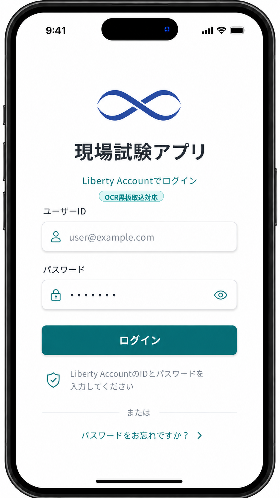
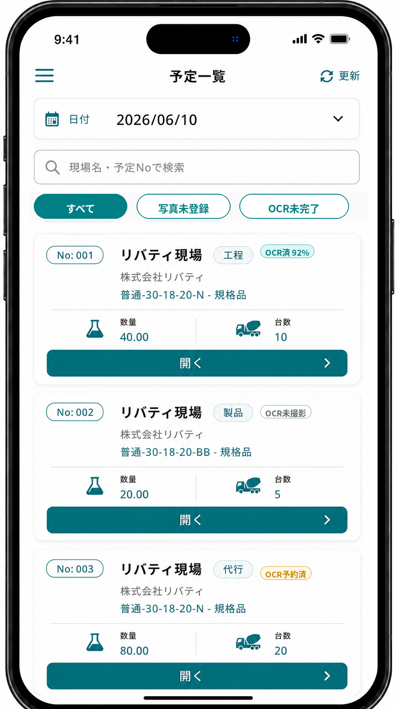
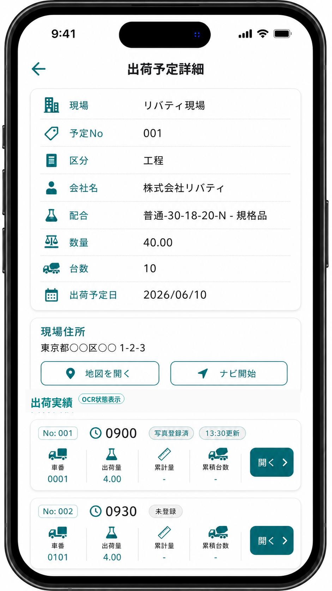
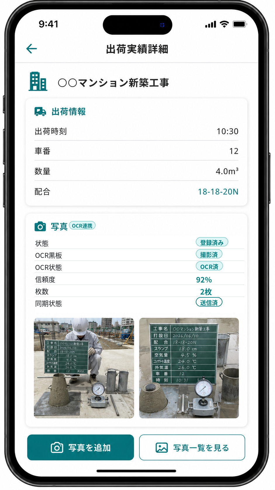
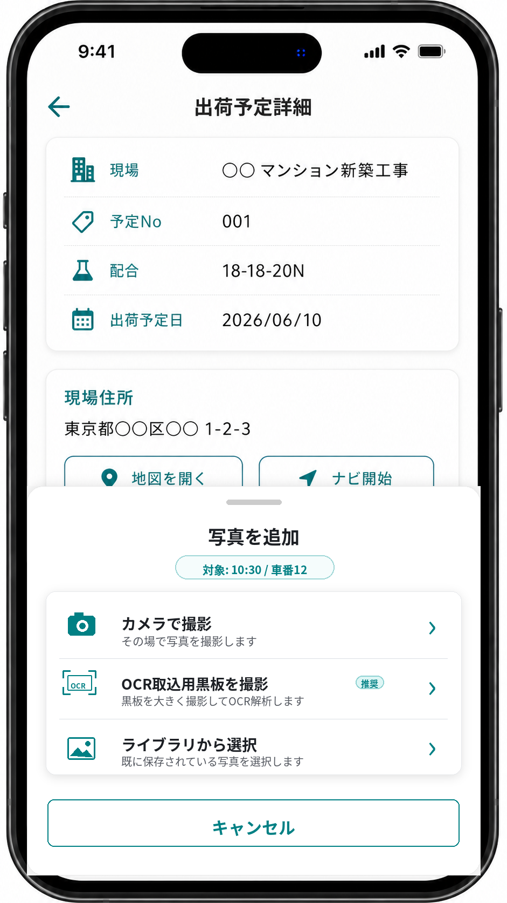
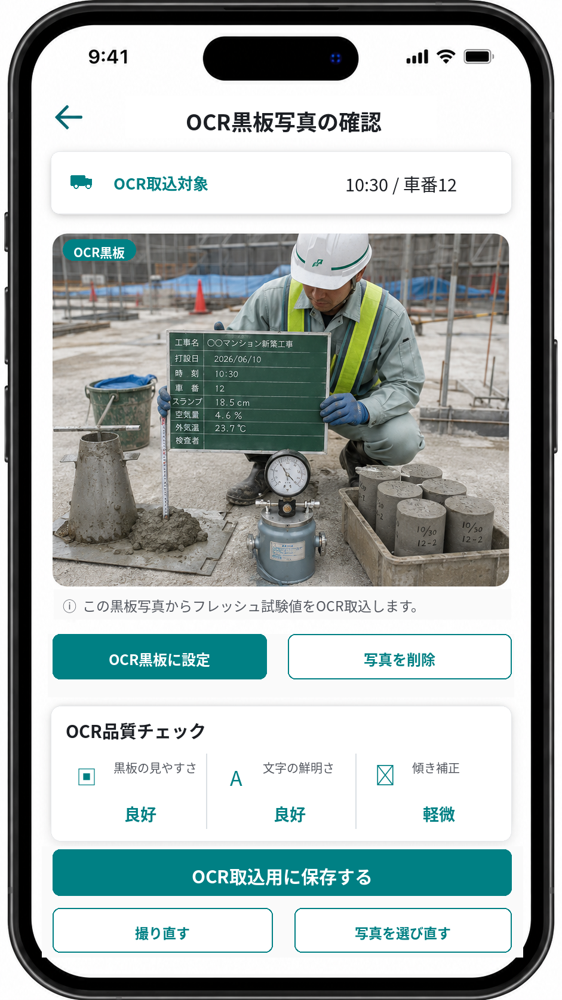
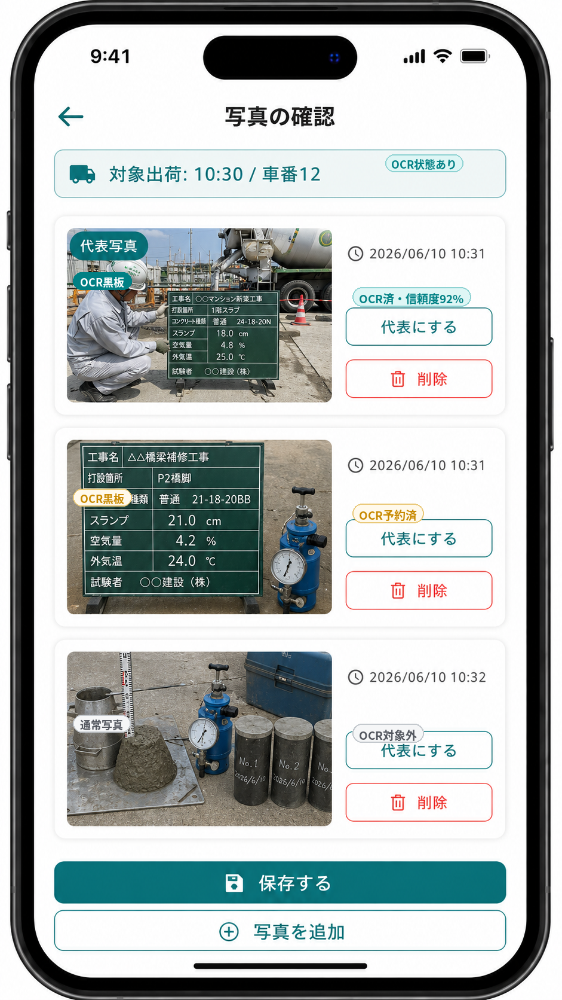
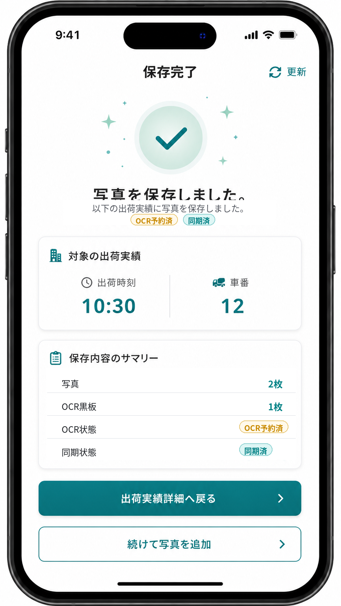

出荷実績写真保存・ローカル写真自動保存・写真保存フォルダ指定・出荷別JPEGエクスポート・OCR取込用黒板撮影・事前OCR・Sync Agent サーバー配置・LibLocal.xml 起点DB接続・Sync Agent 非人間主体認証・Agent credential・Google Maps 連携・Liberty Account 認証・TP採取結果入力へのOCR結果反映方式
| 項目 | 内容 |
|---|---|
| 文書区分 | 基本設計 |
| 対象 | 現場試験アプリ / Labonity TP採取結果入力 / Sync Agent / 写真管理クラウド / Liberty Account 連携 / AI OCR・LLM 取込 |
| 版 | v1.3 |
| 作成日 | 2026-06-12 |
| 目的 | 現場アプリで出荷実績に紐づく写真を保存し、OCR取込用黒板撮影モードで登録された写真をクラウド側で事前 OCR する。Sync Agent は OCR 結果・写真参照情報に加え、写真本体を設定で指定したローカルまたは共有フォルダへ出荷別に JPEG として自動保存する。Sync Agent は Labonity クライアントサーバー構成では原則 Labonity サーバーにインストールし、Labonity の Settings\LibLocal.xml を起点にサーバーフォルダと DB 接続情報を自動解決する。認証は、現場試験 Web アプリの個人認証と Sync Agent の非人間主体認証を分離し、Sync Agent は個人アカウントや refresh token ではなく、orgId + plantId + agentId に紐づく Agent credential で同期 API のみを利用する。Labonity の TP採取結果入力画面では、クラウド API、Sync Agent ローカル API、HTTP、Named Pipe 等を使わず、ローカルDB上の OCR 結果とローカルファイル上の写真を参照して確認・修正し、フレッシュ試験値入力欄へ流し込めるようにする。 |
| 前提 | 現場アプリではフレッシュ試験値の入力、電子黒板合成、黒板レイアウト編集、TP採取結果の正式登録は行わない。Labonity デスクトップアプリはクラウド認証を行わず、クラウド API も Sync Agent のローカル API も呼び出さない。HTTP、localhost API、Named Pipe、gRPC、TCP ソケット等の IPC も使用しない。Labonity デスクトップアプリは、Sync Agent が同期・自動保存したローカルDBおよびローカル写真ファイルだけを参照する。Sync Agent は本番運用では Labonity サーバーに配置し、DB接続情報は Sync Agent 独自に二重入力せず、設定で指定された Settings\LibLocal.xml から Labonity と同じ設定を解決する。写真保存先は DB 接続設定とは別に、Sync Agent の設定で指定できるようにする。Sync Agent は個人ユーザーのアクセストークン、refresh token、パスワード、MFA セッションを保持しない。Sync Agent は組織そのものではなく、組織・工場に紐づいて登録された非人間主体の agentId と Agent credential で認証する。 |
本版は v1.2 の内容を削除せず、認証基盤との接続方針を明確化し、現場試験 Web アプリの個人認証と Sync Agent の非人間主体認証を分離する方式を追加した改訂版である。
| 論点 | v1.3 の判断 |
|---|---|
| Web アプリの認証 | 現場試験 Web アプリは Liberty Account の個人認証を使用する。accountId + orgId + Grant + Role + permission で、誰が予定・出荷・写真・OCR状態を見られるか、誰が写真を撮影できるかを制御する。 |
| Sync Agent の認証 | Sync Agent は個人ユーザーではなく、orgId + plantId + agentId に紐づく非人間主体として認証する。設計上の名称は Agent credential とする。 |
| 組織認証の扱い | 組織そのものをログイン主体とはしない。agentId を認証主体とし、orgId と plantId を認可スコープとして付与する。 |
| 常駐サービスと refresh token | Sync Agent は個人の refresh token を保持しない。常駐サービスは Agent credential を使って短命 access token を取得し直す。 |
| POST 用キーの扱い | 固定 API key を同期 API へ直接投げ続ける方式は標準にしない。POST 用キー相当のものは、Agent credential または初回登録コードとして発行・失効・ローテーション・監査できる形にする。 |
| Token 発行方式 | 認証基盤の実装に合わせ、Client Credentials 相当の非対話トークン発行を標準とする。初期実装では client secret 方式を許容し、将来 mTLS / 証明書方式へ拡張できる余地を残す。 |
| Sync Agent API の制限 | Sync Agent credential では /api/sync/v1/... のみ使用できる。現場アプリ用の /api/core/v1/...、管理者 UI API、他テナント参照 API は使用できない。 |
| 初回登録 | TenantAdmin または権限を持つ管理者が個人ログインして Agent を登録する。初回登録コードまたは client credential を発行し、Sync Agent サーバーに設定する。 |
| credential 保護 | Agent credential は Labonity サーバー上で Windows DPAPI、Windows Credential Manager、または同等の OS 保護領域に保存する。平文設定ファイル保存は避ける。 |
| 監査 | 人間の操作は actor_type = user と account_id、Sync Agent の操作は actor_type = agent と agent_id で監査する。 |
| 既存設計との関係 | v1.0 / v1.1 / v1.2 で決めた、写真 Blob 保存、OCR事前実行、ローカルDB参照、HTTP / Named Pipe 非使用、出荷別 JPEG 自動保存、Sync Agent サーバー配置、LibLocal.xml 起点DB接続、写真フォルダ指定の方針は維持する。 |
orgId + plantId + agentId による認可スコープ固定。/api/sync/v1/... 専用のスコープ設計。actor_type = user / agent 分離。現場試験 Web アプリは Liberty Account の個人認証を使用する。
Sync Agent は個人認証ではなく、orgId + plantId + agentId に紐づく Agent credential で認証する。
Sync Agent は個人の access token、refresh token、パスワード、MFA セッションを保持しない。
Sync Agent は Agent credential で短命 access token を取得し、/api/sync/v1/... のみを呼び出す。
POST 用キーを使う場合でも、固定 API key ではなく、発行・失効・ローテーション・監査できる Agent credential または初回登録コードとして扱う。
組織そのものを認証主体にせず、agentId を認証主体、orgId / plantId を認可スコープとして扱う。
人間の操作は accountId、Sync Agent の操作は agentId で監査する。
既存設計の Labonity デスクトップ非認証、ローカルDB・ローカルファイル参照、HTTP / Named Pipe 非使用、Sync Agent サーバー配置、LibLocal.xml 起点 DB 接続、写真フォルダ指定の方針は維持する。
本版は v1.1 の内容を削除せず、Labonity クライアントサーバー構成における Sync Agent のサーバー配置、Labonity の Settings\LibLocal.xml を起点にした DB 接続自動解決、写真保存フォルダの明示的なパス指定方式を追加した改訂版である。
| 論点 | v1.2 の判断 |
|---|---|
| Sync Agent の配置 | 本番運用では Labonity サーバーへインストールすることを原則必須とする。クライアント PC ごとにはインストールしない。 |
| Labonity サーバーの定義 | SQL Server、Labonity サーバーフォルダ、またはその両方へ常時安定してアクセスできるサーバーを指す。DB サーバーとファイルサーバーが別の場合は、両方へアクセスできるサーバー側ネットワーク上に配置する。 |
| インストール単位 | tenant_id + plant_id を基本単位とし、同一工場に対して有効な Sync Agent は原則 1 つにする。二重起動・二重同期を防止する。 |
| DB 接続設定 | Sync Agent に DB サーバー名、DB名、SQLユーザー、SQLパスワードを直接入力させない。Sync Agent 設定では Labonity の Settings\LibLocal.xml のパスを指定する。 |
| LibLocal.xml の扱い | LibLocal.xml の BasicServerFolder/p_サーバーフォルダパス を読み、Labonity サーバーフォルダを解決する。 |
| LibertyDatabaseSetting.xml の扱い | 解決したサーバーフォルダ配下の LibertyDatabaseSetting.xml から SQL Server 接続情報と DB 名を読み取る。 |
| デフォルト接続へのフォールバック | Sync Agent では禁止する。設定ファイル不足、DB設定不足、接続失敗、権限不足の場合は同期停止状態にする。誤った DB へ同期しない。 |
| 写真保存フォルダ | Sync Agent 設定で指定可能にする。複数 Labonity クライアントから参照する場合は UNC 共有パスを標準とする。 |
| 書込パスと参照パス | サーバー上のローカルディスクへ書き込む場合でも、Labonity クライアントが参照するパスは UNC 共有パスとして保存できるようにする。 |
| 既存設計との関係 | v1.0 / v1.1 で決めた、写真 Blob 保存、OCR事前実行、ローカルDB参照、HTTP / Named Pipe 非使用、出荷別 JPEG 自動保存の方針は維持する。 |
LabonityLocalSettingFilePath。LibLocal.xml から p_サーバーフォルダパス を読み、LibertyDatabaseSetting.xml を自動検出する DB 接続解決方式。WriterRootPath / LabonityVisibleRootPath 分離。Sync Agent は本番では Labonity サーバーにインストールする。
Sync Agent は DB 接続情報を直接管理せず、Labonity の Settings\LibLocal.xml を起点に解決する。
Sync Agent は LibLocal.xml からサーバーフォルダを取得し、LibertyDatabaseSetting.xml から DB 接続情報を取得する。
Sync Agent は設定不足時に Labonity 側のデフォルト値へフォールバックしない。
写真保存先は Sync Agent 設定で指定できる。
複数端末の Labonity から写真を見る場合、Labonity が参照するパスは UNC 共有パスを標準とする。
Labonity デスクトップアプリは引き続きクラウド API、Sync Agent ローカル API、HTTP、Named Pipe、gRPC、TCP ソケット等を使用しない。
本版は v1.0 の内容を削除せず、現場アプリで撮影された写真を Sync Agent がローカルの指定フォルダへ自動保存する方式を追加した改訂版である。
| 論点 | v1.1 の判断 |
|---|---|
| 現場アプリで撮影した写真のローカル保存 | 必須とする。クラウド Blob Storage への保存後、Sync Agent がローカル指定フォルダへ自動で JPEG 化・出荷別分類して保存する。 |
| Labonity デスクトップ連携 | HTTP、localhost API、Named Pipe、gRPC、TCP ソケット等は使用しない。Labonity はローカルDBとローカルファイルのみ参照する。 |
| Sync Agent の役割 | クラウドとの同期だけでなく、写真ファイルをローカルへマテリアライズする。通常写真、OCR取込用黒板写真、サムネイル、メタデータを対象にする。 |
| ローカル保存形式 | Labonity が扱いやすく、台帳・確認・バックアップに利用しやすい JPEG を標準とする。HEIC / PNG などは JPEG 正規化する。 |
| 分類単位 | tenant_id + plant_id + syukka_id を正とし、フォルダは工場、出荷日、現場、予定、出荷実績ごとに階層化する。 |
| ファイル名 | 表示名は人が追いやすくしつつ、photo_asset_id を含めて衝突しない安定名にする。表示順変更だけでは原則リネームしない。 |
| 既存設計との関係 | Blob Storage はクラウド側の保管先として維持する。ローカル保存は Labonity 参照・帳票・現場証跡用の自動出力コピーであり、写真本体をローカルDBへ Base64 保存するものではない。 |
FieldPhotoLocalFile によるローカル写真ファイル管理。FieldPhotoMaterializeJob による写真ダウンロード・JPEG 正規化・出荷別フォルダ出力の再試行管理。FieldPhotoExportConfig による出力先ルート、フォルダ命名規則、保持期間、JPEG 品質、通常写真の出力有無の設定。本システムは、出荷実績を中心に、現場写真、OCR取込用黒板写真、事前 OCR 結果、TP採取結果入力画面を連携させる。
| 領域 | 管理主体 | 内容 |
|---|---|---|
| 現場・出荷予定・出荷実績の参照データ | Labonity ローカルDB / Sync Agent / クラウド | 現場アプリ表示用にクラウドへ同期する。 |
| 写真本体 | クラウド Blob Storage | 現場アプリからアップロードする。Base64 でDB保存しない。 |
| 写真メタデータ | クラウド DB | 写真、サムネイル、対象出荷、代表写真、OCR取込用黒板写真、削除状態を管理する。 |
| OCR実行 | クラウド OCR / LLM Worker | OCR取込用黒板写真の commit 後に自動実行する。Labonity デスクトップから実行依頼しない。 |
| OCR結果・品質情報 | クラウド DB | 抽出値、項目別信頼度、画像品質、警告、検証結果、モデル情報、プロンプト情報、処理時間、失敗理由を保存する。 |
| 写真参照メタデータ | ローカル連携キャッシュ | Sync Agent がクラウドから取得し、Labonity 側で出荷実績から写真有無を確認するために使用する。 |
| OCR結果参照データ | ローカル連携キャッシュ | Sync Agent がクラウドから取得し、Labonity 側で syukka_id から OCR 結果を確認・反映するために使用する。 |
| ローカル写真キャッシュ | Sync Agent / ローカルファイル領域 | OCR結果確認画面で読取元画像を表示するため、OCR取込用黒板写真とサムネイルをローカル保存する。 |
| ローカル写真自動保存 / 出荷別JPEGエクスポート | Sync Agent / ローカル指定フォルダ | 現場アプリで撮影・commit 済みの写真を、通常写真も含めてローカルの指定フォルダへ出荷別に JPEG 保存する。Labonity はこのファイルを通常のローカルファイルとして参照する。 |
| TP採取結果データ | Labonity TP採取結果入力 | TP採取結果、フレッシュ試験値、縦割り、データ区分、保存状態を扱う。 |
| 認証・認可 | Liberty Account | 現場試験 Web アプリは個人認証で利用者・組織・権限を判定する。Sync Agent は個人ではなく Agent credential により orgId + plantId + agentId の非人間主体として認証・認可する。 |
本設計での基本ルールは次の通りである。
写真はクラウド上では Shipment.shipment_id に紐づける。
Labonity 側では syukka_id をキーにローカル参照テーブルを検索する。
OCR取込用黒板撮影モードで保存された写真だけを自動 OCR 対象にする。
OCR結果は syukka_id に紐づく事前 OCR 結果としてクラウドDBとローカル参照DBに保存する。
OCR結果には抽出値だけでなく、項目別信頼度、画像品質、警告、検証結果、モデル情報を保存する。
Labonity デスクトップアプリはクラウド認証を行わず、クラウドAPIを直接呼び出さない。
Labonity デスクトップアプリは Sync Agent に OCR 実行依頼を行わない。
Labonity デスクトップアプリは Sync Agent のローカル HTTP API、Named Pipe、gRPC、TCP ソケット等を呼び出さない。
Sync Agent は写真をローカル指定フォルダへ出荷別に JPEG 保存し、ローカルDBにそのパスと状態を保存する。
Sync Agent は本番運用では Labonity サーバーにインストールし、クライアント PC ごとのインストールは行わない。
Sync Agent は Labonity の Settings\LibLocal.xml を起点に DB 接続情報を解決し、DB 接続情報を二重管理しない。
Sync Agent は個人アカウントではなく、orgId + plantId + agentId に紐づく Agent credential で認証する。
Sync Agent は個人の refresh token、パスワード、MFA セッションを保持しない。
Sync Agent credential では同期 API のみを利用し、現場アプリ API や Labonity デスクトップ向け API は利用しない。
写真出力先は Sync Agent 設定で指定し、複数クライアント運用時は Labonity が参照可能な UNC 共有パスを保存する。
Labonity 側では syukka_id をキーにローカル写真ファイルパスを検索し、ファイルシステムから画像を開く。
Labonity 側では、ローカルDBの OCR 結果を確認・修正して、現在行の renban + datakubun の入力欄へ流し込む。
TP採取結果の正式保存は Labonity の通常保存処理で行う。
| 仕様領域 | 設計への反映 |
|---|---|
| 出荷予定 | YoteiDataMain は yotei_id を主キーとし、予定日は syukka_yoteibi、予定 No は yotei_no、工場は kozyo_id を持つ。クラウド側では tenant_id + plant_id + source_local_id を同期キーにする。 |
| 出荷実績 | SyukkaDataMain は syukka_id を主キーとし、yotei_id、seq_no、syukka_nengappi、syukka_zikoku、syaban、syukkaryo、seizoryo、kozyo_id を持つ。写真と事前 OCR 結果はこの出荷実績を対象に登録する。 |
| 現場 | Genba は現場名・住所、Genba_Syukka は出荷用現場名・緯度・経度を持つ。地図連携では住所と緯度経度を組み合わせて使用する。 |
| TP採取結果 | TestPieceSaisyu_FreshSiken は testpiecesaisyu_main_id + renban + datakubun でフレッシュ試験行が決まる。OCR結果の反映先は Labonity 画面が保持する現在行の renban と現在表示中の datakubun で特定する。 |
| TP と出荷の関係 | TestPieceSaisyu_SyukkaData は testpiecesaisyu_main_id + renban + syukka_id の関係を持つ。縦割り時も renban ごとに対象の出荷実績が決まる。 |
現場アプリの役割は、その日の出荷予定・出荷実績を確認し、対象出荷に写真を追加することである。
現場アプリで行うことは次の範囲に限定する。
現場アプリで行わないことは次の通りである。
写真は、出荷実績に紐づく写真として扱う。
現場では、黒板が写った写真だけでなく、現場状況、測定状況、補足写真などを追加する可能性がある。そのため、通常写真の主操作名は [写真を追加] とする。
一方、OCR 取込に使う写真は、通常写真の分類選択ではなく、専用の [OCR取込用黒板を撮影] 操作から登録する。
[写真を追加]
現場状況、測定状況、補足写真などを保存する通常写真。
[OCR取込用黒板を撮影]
Labonity のフレッシュ試験値取込に使う黒板写真。
保存後、クラウド側で自動 OCR する。
通常写真については写真分類を行わない。
photo_category を持たせない。OCR取込用黒板写真については、分類ではなく 業務用途フラグとして扱う。
| 項目 | 内容 |
|---|---|
| 通常写真 | capture_purpose = general。OCR対象にしない。 |
| OCR取込用黒板写真 | capture_purpose = fresh_test_ocr_blackboard。保存後に自動 OCR 対象にする。 |
OCR取込を使いたい場合、現場担当者は対象の出荷実績に対して 1 枚の OCR取込用黒板写真を撮影する。
| 項目 | 方針 |
|---|---|
| 撮影単位 | 出荷実績 1 件につき、OCR取込用黒板写真 1 枚を基本とする。 |
| 自動OCR | OCR取込用黒板写真の commit 後、クラウド側で自動 OCR する。 |
| 通常写真 | 通常写真は自動 OCR しない。 |
| 差し替え | 撮り直し時は新しい写真を現在の OCR取込用黒板写真とし、古い OCR 結果は superseded にする。 |
| 忘れ防止 | 出荷予定一覧・出荷実績一覧・詳細に「OCR未撮影 / OCR予約済 / OCR読取中 / OCR済 / 要確認 / 失敗」を表示する。通常写真は「OCR対象外」として区別する。 |
| 費用抑制 | OCR取込用黒板撮影モードで撮影された写真だけを OCR 実行対象にする。 |
| 品質確保 | 撮影直後にプレビュー、ぼけ・暗さ・傾き警告を表示する。 |
OCR取込用黒板写真が未撮影でも、Labonity の通常入力業務は継続できる。この場合、TP採取結果入力画面では OCR 取込を行わず、手入力する。
代表写真は、一覧・詳細画面で最初に表示するための補助情報である。OCR 対象を固定するための項目ではない。
Labonity 側では、TP採取結果入力画面から対象 TP を作成または表示し、対象の出荷実績を指定する。
指定した出荷実績に同期済みの OCR 結果がある場合、Labonity 側はローカルDBから OCR 結果を読み取り、OCR結果確認画面を表示する。ユーザーは OCR 値、項目別信頼度、警告、現在値との差分、読取元写真を確認し、必要に応じて修正したうえで TP採取結果入力画面の入力欄へ反映する。
Labonity 側では次を行わない。
Labonity 側が行うことは次の通りである。
syukka_id に対応するローカル OCR 結果を検索する。renban + datakubun の入力欄へ反映する。Labonity 側の業務データとクラウド側の写真・OCRデータは、次の境界で連携する。
| 項目 | 内容 |
|---|---|
| Labonity 側の保存責務 | TP採取結果、フレッシュ試験値、供試体セット、ピース、出荷紐づけの正式保存を扱う。 |
| クラウド側の保存責務 | 現場アプリ表示用の参照データ、写真本体、写真メタデータ、OCRジョブ、OCR結果、OCR品質情報、抽出JSONを扱う。 |
| Sync Agent の責務 | ローカルDBからクラウドへの基幹参照データ同期、クラウドからローカルへの写真参照・OCR結果・ローカル写真キャッシュ同期を行う。 |
| Labonity 側の参照 | FieldOcrResultReference / FieldOcrResultFieldReference / FieldPhotoReference / ローカル写真キャッシュを参照する。 |
| 画面反映 | ユーザー確認済みの OCR 値は Labonity 画面の入力欄へ反映する。 |
| 保存タイミング | ユーザーが TP採取結果入力画面の保存操作を行った時点で Labonity DB に保存される。 |
| 反映先行 | renban と datakubun は Labonity 画面の現在コンテキストとして扱う。OCR結果側では固定しない。 |
Sync Agent は、各社ローカルDBからクラウドへ現場アプリに必要な参照データを同期し、クラウドからローカルへ写真参照情報・OCR結果・OCR取込用黒板写真を同期するサービスである。
TP採取結果入力画面との連携は、出荷実績と画面コンテキストで行う。
| 領域 | クラウド | ローカル / Labonity |
|---|---|---|
| 出荷実績 | Shipment.shipment_id と source_local_id = syukka_id を保持する。 |
SyukkaDataMain.syukka_id を持つ。 |
| 写真 | PhotoAsset / PhotoAssetTarget で管理する。OCR取込用黒板写真は capture_purpose で識別する。 |
FieldPhotoReference で写真有無・ローカルキャッシュ状態を参照する。 |
| OCR結果 | OcrImportJob / OcrImportResult / OcrImportResultField で管理する。 |
FieldOcrResultReference / FieldOcrResultFieldReference で syukka_id から参照する。 |
| フレッシュ試験行 | 永続キーとしては扱わない。 | testpiecesaisyu_main_id + renban + datakubun で保存する。 |
| OCR 反映先 | OCR 結果は syukka_id に紐づく。renban と datakubun は持たせない。 |
現在行の renban と現在表示中の datakubun に反映する。 |
| DB 保存 | OCR結果はクラウドDBとローカル参照DBに保存するが、Labonity の TP DB へは直接保存しない。 | TP採取結果入力画面の保存操作で保存する。 |
現場試験 Web アプリ、クラウド API、Sync Agent は Liberty Account の仕組みを使用して認証・認可を行う。ただし、人間の利用者とサーバー常駐の Sync Agentは認証主体を分ける。
Labonity デスクトップアプリは Liberty Account によるクラウド認証を行わない。Labonity デスクトップアプリは、Sync Agent がローカルへ同期済みのデータと、Sync Agent がローカル指定フォルダへ自動保存した写真ファイルを参照する。
| 項目 | 方針 |
|---|---|
| 認証基盤 | Liberty Account。 |
| 現場試験 Web アプリ | OAuth2 Authorization Code + PKCE を使用する。個人の accountId を認証主体とする。 |
| Sync Agent | 個人ではなく、orgId + plantId + agentId に紐づく非人間主体として認証する。設計上の credential 名は Agent credential とする。 |
| Sync Agent token | Agent credential で短命 access token を取得する。個人 refresh token は使用しない。 |
| Labonity デスクトップ | クラウド認証しない。クラウドAPIを呼び出さない。Sync Agent への OCR 実行依頼もしない。 |
| テナント ID | Liberty Account の orgId を本システムの tenant_id として扱う。 |
| 利用可否 | Web アプリは serviceCode = LABONITY_FIELD_TEST の Grant とサービスメンバー状態で判定する。Sync Agent は org / plant に対して登録済みの active agent であることを判定する。 |
| API 境界 | /api/core/v1/orgs/{orgId}/...、/api/sync/v1/orgs/{orgId}/... のように orgId を URL に含める。 |
| データ分離 | URL の orgId、トークンの orgId、DB の tenant_id が一致する場合だけアクセスを許可する。 |
本設計では、認証主体を次のように分ける。
| 種別 | 認証主体 | 主な用途 | 監査主体 |
|---|---|---|---|
| 人間 | accountId |
現場試験 Web アプリのログイン、予定・出荷・写真・OCR状態の閲覧、写真撮影、管理操作。 | actor_type = user, account_id |
| Sync Agent | agentId |
Labonity サーバー常駐サービスによる参照データ同期、写真・OCRイベント取得、ACK、写真ダウンロード URL 取得。 | actor_type = agent, agent_id |
| Labonity デスクトップ | なし | ローカルDBとローカル写真ファイル参照のみ。クラウド認証しない。 | Labonity 側の既存ローカルユーザーまたはローカル監査。 |
「組織としての認証」という表現は使用しない。組織はログイン主体ではなく、Agent credential の認可スコープである。Sync Agent の主体はあくまで agentId とし、その agent に orgId、plantId、許可 scope を紐づける。
人間利用者
-> accountId で認証
-> orgId / Grant / Role / permission で認可
Sync Agent
-> agentId で認証
-> orgId / plantId / scope で認可
ログインフローは次の通りである。
ログイン後、アプリは次を行う。
accountId、メール、表示名を取得する。includePermissions=true により、所属組織ごとの権限を取得する。LABONITY_FIELD_TEST の Grant が利用可能な組織だけを候補にする。orgId をアプリの現在テナントとして保持する。複数組織に所属するユーザーは、ログイン後に利用組織を選択する。
+----------------------------------+
| 利用組織を選択 |
|----------------------------------|
| ログインユーザー: yamada@example |
| |
| [ ABC生コン株式会社 ] |
| 現場試験アプリ 利用可 |
| |
| [ XYZ工業株式会社 ] |
| 現場試験アプリ 利用可 |
| |
+----------------------------------+
選択後は、全 API 呼び出しに orgId を含める。
GET /api/core/v1/orgs/{orgId}/shipping-schedules?date=2026-06-10
現場試験アプリのサービスコードは次とする。
LABONITY_FIELD_TEST
Grant 判定では次を確認する。
| 判定項目 | 内容 |
|---|---|
| 組織所属 | ユーザーが対象 orgId に所属している。 |
| 組織メンバー状態 | ACTIVE のメンバーである。 |
| サービス Grant | LABONITY_FIELD_TEST が対象 orgId で利用可能である。 |
| サービスメンバー | 対象ユーザーがサービス利用可能メンバーである。 |
| 有効期間 | Grant の有効期間内である。 |
| ロール権限 | 操作に必要な権限コードを持つ。 |
Sync Agent は人間のサービスメンバーとしては扱わない。Sync Agent は、対象 orgId / plantId に対して登録された Agent registration と credential により利用可否を判定する。
現場試験アプリでは、次の権限コードを使用する。
| 権限コード | 用途 |
|---|---|
FieldTest:Schedule:Read |
出荷予定一覧、出荷予定詳細の参照。 |
FieldTest:Shipment:Read |
出荷実績一覧、出荷実績詳細の参照。 |
FieldTest:Photo:Read |
写真一覧、サムネイル、写真状態の取得。 |
FieldTest:Photo:Write |
通常写真アップロード、写真 commit、代表写真設定。 |
FieldTest:Photo:Delete |
写真の論理削除。 |
FieldTest:OcrBlackboard:Capture |
OCR取込用黒板写真の撮影・保存・差し替え。 |
FieldTest:OcrBlackboard:Read |
現場アプリ上で OCR 処理状態・結果概要を参照する。 |
FieldTest:Sync:Import |
Sync Agent による基幹参照データ import。 |
FieldTest:Sync:Read |
Sync Agent による写真・OCR結果イベント取得。 |
FieldTest:Sync:Ack |
Sync Agent によるイベント ACK。 |
FieldTest:Sync:PhotoCache |
Sync Agent による OCR取込用写真および通常写真のローカル保存用ダウンロード URL 取得。 |
FieldTest:Sync:Heartbeat |
Sync Agent の稼働状態、二重稼働検知、診断情報送信。 |
FieldTest:Agent:Manage |
管理者による Sync Agent 登録、失効、credential 再発行、ローテーション。 |
FieldTest:Admin:Manage |
管理設定、手動再同期、同期状況、OCR失敗状況の確認。 |
| ロール | 代表権限 |
|---|---|
| 現場担当者 | Schedule:Read, Shipment:Read, Photo:Read, Photo:Write, OcrBlackboard:Capture, OcrBlackboard:Read |
| 品質管理担当 | Schedule:Read, Shipment:Read, Photo:Read, OcrBlackboard:Read |
| 事務所担当 | Schedule:Read, Shipment:Read, Photo:Read, OcrBlackboard:Read |
| 管理者 | 上記に加え Photo:Delete, Agent:Manage, Admin:Manage |
| Sync Agent | Sync:Import, Sync:Read, Sync:Ack, Sync:PhotoCache, Sync:Heartbeat |
Sync Agent はロール名としては表示してもよいが、人間ユーザーのロール割当とは分ける。Agent registration に許可 scope を持たせる。
Sync Agent は対話ログインを行わない。テナント・工場・エージェント単位に発行された Agent credential を使用して、Liberty Account または認証基盤の token endpoint から短命 access token を取得し、クラウド API へ接続する。
| 項目 | 内容 |
|---|---|
| 認証主体 | agentId。人間の accountId ではない。 |
| 認証方式 | Client Credentials 相当の非対話認証。認証基盤の実装上は confidential client、service application、POST credential のいずれかでもよいが、本設計では総称して Agent credential と呼ぶ。 |
| スコープ | orgId + plantId + agentId で固定する。 |
| token の有効期限 | 短命 access token とする。期限切れ時は Agent credential で再取得する。 |
| refresh token | 使用しない。Sync Agent に個人 refresh token を保存しない。 |
| 利用可能 API | /api/sync/v1/... のみ。 |
| 現場アプリ API | Sync Agent credential では使用不可。 |
| 管理 API | Agent 自身による credential 発行・権限拡張は不可。管理者の個人ログインで実行する。 |
| OCR 実行 | Sync Agent は OCR 実行依頼を送らない。クラウド側で完了した OCR 結果を取得する。 |
| 監査 | import、event pull、ack、photo download-url、photo materialize status、ocr result sync、heartbeat をすべて actor_type = agent で AuditLog に記録する。 |
Sync Agent 用 access token には、少なくとも次に相当する情報を含める。
{
"sub": "agent:AGENT-001",
"actor_type": "agent",
"orgId": "ORG-001",
"plantId": "KOZYO-001",
"agentId": "AGENT-001",
"scope": [
"FieldTest.Sync.Import",
"FieldTest.Sync.Read",
"FieldTest.Sync.Ack",
"FieldTest.Sync.PhotoCache",
"FieldTest.Sync.Heartbeat"
],
"aud": "labonity-field-test-sync-api",
"exp": 1780000000
}
API 側では、各リクエストで次を検証する。
URL の orgId と token の orgId が一致する。
request body または query の plantId と token の plantId が一致する。
agentId が active である。
agent credential が失効・期限切れ・ローテーション無効状態ではない。
要求 API に必要な scope を持つ。
/api/sync/v1 以外を呼び出していない。
Agent 登録は、TenantAdmin または FieldTest:Agent:Manage を持つ管理者が個人ログインして行う。
初回登録コードを使用する場合は次を必須とする。
| 項目 | 方針 |
|---|---|
| 有効期限 | 短時間。初期値 24 時間以内を推奨する。 |
| 使用回数 | 1 回限り。登録完了後は無効化する。 |
| 用途 | 初回 credential 引換または初回登録確認だけに使用する。通常の同期 API には使わない。 |
| 表示 | 管理者に一度だけ表示する。再表示しない。紛失時は再発行する。 |
| 項目 | 方針 |
|---|---|
| 保存場所 | Windows DPAPI、Windows Credential Manager、または同等の OS 保護領域を使用する。平文 JSON / XML への secret 保存は避ける。 |
| ログ | client secret、登録コード、access token、SQL パスワードはログに出さない。出す場合はマスクする。 |
| 失効 | 管理者が Agent credential を即時失効できる。失効後の access token も可能な限り短時間で無効化する。 |
| 再発行 | サーバー移行、漏えい疑い、担当者変更時に credential を再発行できる。 |
| ローテーション | 新旧 credential の一時併用期間を設け、無停止または短時間停止で切り替えられるようにする。 |
| machine binding | 初期実装では必須にしないが、将来は machine name、証明書、mTLS 等により agent credential をサーバーへ紐づけられる余地を残す。 |
認証基盤側に「POST 用キー発行」の概念を設ける場合でも、本設計では次のように扱う。
避ける:
固定 API key を各同期 API に直接付与し、長期間そのまま使う。
採用する:
POST 用キー相当の値を Agent credential または初回登録コードとして発行する。
Agent credential は token endpoint で短命 access token に交換して使う。
発行、失効、再発行、ローテーション、監査ができるようにする。
これにより、常駐サービスの運用安定性を確保しつつ、漏えい時の影響範囲と対処方法を明確にできる。
全テーブルに tenant_id を保持し、すべての検索・更新条件に含める。
| 対象 | 分離方法 |
|---|---|
| DB | tenant_id 必須。主な UNIQUE / INDEX に tenant_id と plant_id を含める。 |
| Blob | orgId/plantId/... をパスに含める。 |
| IndexedDB | ログイン orgId ごとにストアまたはキー空間を分離する。 |
| API | URL の orgId とトークン所属 org の一致を検証する。Sync Agent では URL の orgId、token の orgId、request の plantId、token の plantId、agentId を検証する。 |
| Sync Agent | Agent credential に許可 orgId / plantId / agentId / scope を紐づける。 |
| ローカルDB | tenant_id + plant_id を保持し、Labonity 側の検索条件に含める。 |
| ローカル写真キャッシュ | orgId/plantId/syukkaId/photoAssetId を含むパスで分離する。 |
| ログ | すべての監査ログに tenant_id、actor_type、account_id または agent_id を保持する。 |
| 領域 | 同期方向 | 用途 |
|---|---|---|
| 現場関連データ | ローカルDB → クラウド | 現場名、住所、地図、出荷詳細表示に使用する。 |
| 出荷予定関連データ | ローカルDB → クラウド | 現場アプリの出荷予定一覧に使用する。 |
| 出荷実績関連データ | ローカルDB → クラウド | 出荷実績一覧・詳細、写真紐づけ、OCR結果の出荷キーに使用する。 |
| 写真本体 | 現場アプリ → Blob Storage | 現場で発生する写真本体を保存する。 |
| 写真メタデータ | クラウド → ローカル参照テーブル | Labonity 側で写真有無、読取元写真、写真状態を判定する。 |
| OCR結果 | クラウド → ローカル OCR 参照テーブル | Labonity 側で syukka_id から OCR 結果を取得する。 |
| OCR取込用写真キャッシュ | クラウド Blob Storage → ローカルファイル | Labonity 側で OCR結果確認時に読取元画像を表示する。 |
| ローカル写真自動保存 | クラウド Blob Storage → ローカル指定フォルダ | 通常写真と OCR取込用黒板写真を出荷別に JPEG 保存し、Labonity 側でローカルファイルとして参照する。 |
| ローカル写真ファイル管理状態 | Sync Agent → ローカル参照テーブル | JPEG 生成状態、出力先パス、ハッシュ、サイズ、エラー、削除状態を保存する。 |
| 項目 | 内容 |
|---|---|
| 実行形態 | .NET Worker Service / Windows Service。 |
| 配置場所 | 本番運用では Labonity サーバー。SQL Server、Labonity サーバーフォルダ、写真出力先へ常時安定してアクセスできるサーバー側に配置する。クライアント PC ごとの配置は行わない。 |
| 通信方向 | Sync Agent からクラウドAPIへのアウトバウンド HTTPS。 |
| 認証 | Liberty Account / 認証基盤の Agent credential。個人ではなく orgId + plantId + agentId の非人間主体として発行する。短命 access token を取得し、個人 refresh token は使用しない。 |
| 認可スコープ | tenant_id + plant_id を基本にする。予定Noや出荷Noの混線を防ぐ。 |
| 冪等性 | source_system / source_table / source_local_id / source_hash / idempotency_key で担保する。 |
| ローカルDB接続 | ローカルDBの読み取りを基本とする。写真参照・OCR結果の反映先は連携用ローカルキャッシュとする。DB 接続情報は Sync Agent 設定に直接入力せず、Labonity の Settings\LibLocal.xml から解決する。 |
| DB設定起点 | Sync Agent 設定で LabonityLocalSettingFilePath を指定する。LibLocal.xml から p_サーバーフォルダパス を読み、配下の LibertyDatabaseSetting.xml から DB 接続情報を取得する。 |
| 設定不足時 | LibLocal.xml、サーバーフォルダ、LibertyDatabaseSetting.xml、DB 接続、権限確認のいずれかに失敗した場合は同期を開始しない。既定値へのフォールバックは禁止する。 |
| 写真キャッシュ | OCR取込用黒板写真とサムネイルをローカルファイルに保存する。通常写真の原本は原則キャッシュしない。 |
| ローカル写真エクスポート | 通常写真を含む commit 済み写真を、設定された出力先へ出荷別フォルダで JPEG 保存する。OCR取込用黒板写真は最優先、通常写真は次優先で処理する。 |
| Labonity 連携方式 | Labonity デスクトップアプリとは API / Named Pipe / IPC 連携しない。ローカルDBとファイルパスだけで連携する。 |
| クラウドテーブル | 元データ例 | 主な用途 |
|---|---|---|
FieldSite |
Genba, Genba_Syukka |
現場名、住所、地図、出荷表示。 |
FieldSiteContact |
Genba_Renrakusaki 等 |
連絡先表示が必要な場合。 |
FieldSiteConcreteSpec |
Genba_Haigo 等 |
配合・現場別表示補助が必要な場合。 |
FieldSite の最低限必要な項目は次の通り。
| 項目 | 説明 |
|---|---|
field_site_id |
クラウド側ID。 |
tenant_id |
Liberty Account の orgId。 |
plant_id |
工場ID。 |
source_local_id |
ローカル Genba.id 等。 |
site_name1 / site_name2 |
現場名。 |
shipping_site_name1 / shipping_site_name2 |
Genba_Syukka の出荷用現場名。 |
site_short_name |
略称。 |
address1 / address2 |
Google Maps 起動に使う住所。 |
latitude / longitude |
Genba_Syukka.ido / Genba_Syukka.keido を正規化して保持する。 |
map_query_text |
住所と現場名から生成した検索文字列。 |
updated_source_at |
ローカル側最終更新日時。 |
source_hash |
差分判定用ハッシュ。 |
| クラウドテーブル | 元データ例 | 主な用途 |
|---|---|---|
ShippingSchedule |
YoteiDataMain |
出荷予定一覧。 |
ShippingScheduleNote |
YoteiData_Biko |
必要に応じて備考表示。 |
ShippingScheduleTpFlag |
YoteiData_TpSaisyu, YoteiData_Okinawa 等 |
TP 対象参考表示。 |
ShippingSchedule の最低限必要な項目は次の通り。
| 項目 | 説明 |
|---|---|
shipping_schedule_id |
クラウド側ID。 |
tenant_id |
テナント ID。 |
plant_id |
YoteiDataMain.kozyo_id 相当。 |
source_local_id |
ローカル yotei_id。 |
shipping_date |
syukka_yoteibi。 |
schedule_no |
yotei_no。予定No単独では一意にしない。 |
field_site_id |
現場ID。 |
field_site_source_local_id |
ローカル genba_id。 |
mix_id / mix_name |
配合。 |
scheduled_time |
予定時刻。 |
planned_vehicle_count |
出荷予定台数。 |
planned_quantity |
出荷予定数量。 |
source_hash |
差分判定用ハッシュ。 |
推奨自然キーは次の通り。
tenant_id + plant_id + source_system + source_table + source_local_id
予定Noを表示・検索に使う場合も、内部処理では plant_id を必ず併用する。
| クラウドテーブル | 元データ例 | 主な用途 |
|---|---|---|
Shipment |
SyukkaDataMain |
出荷実績一覧・詳細、写真紐づけ、OCR結果の出荷キー。 |
ShipmentTpTarget |
SyukkaData_TpSaisyu |
TP 対象情報の参考表示。 |
ShipmentSlip |
SyukkaData_Denpyo |
伝票系情報が必要な場合。 |
Shipment の最低限必要な項目は次の通り。
| 項目 | 説明 |
|---|---|
shipment_id |
クラウド側ID。写真紐づけの PhotoAssetTarget.target_id。 |
tenant_id |
テナント ID。 |
plant_id |
SyukkaDataMain.kozyo_id 相当。 |
source_local_id |
ローカル SyukkaDataMain.syukka_id。 |
shipping_schedule_id |
クラウド出荷予定ID。 |
shipping_schedule_source_local_id |
ローカル YoteiDataMain.yotei_id。 |
seq_no |
出荷実績の Seq No。 |
shipping_date |
出荷日。 |
shipping_time |
出荷時刻。 |
vehicle_no |
車番。 |
quantity |
出荷数量。 |
manufactured_quantity |
製造量。 |
field_site_id |
現場ID。 |
mix_id / mix_name |
配合。 |
tp_target_flag |
TP 採取対象参考フラグ。 |
source_hash |
差分判定用ハッシュ。 |
| 項目 | 内容 |
|---|---|
| 差分検出 | rowversion、最終更新日時、または対象項目の source_hash を使用する。 |
| Upsert | tenant_id + plant_id + source_system + source_table + source_local_id を自然キーにする。 |
| 削除 | 物理削除ではなく deleted_at / is_deleted を同期する。 |
| 再送 | 同一 idempotency_key は重複登録しない。 |
| チェックポイント | テーブルごと・テナントごと・工場ごとに SyncCheckpoint を保持する。 |
| フル同期 | 夜間または手動で再同期できるようにする。 |
| データ | 推奨周期 |
|---|---|
| 当日・翌日の出荷予定 / 出荷実績 | 1〜5分。 |
| 現場マスター | 5〜30分、または変更検知時。 |
| 過去データ補正 | 夜間バッチまたは手動再同期。 |
| 写真メタデータイベント | 1〜5分。 |
| OCR結果イベント | 1〜5分。OCR結果確認前に Sync Agent が最新状態へ追従できることを目標にする。 |
| OCR取込用写真キャッシュ | OCR結果イベント取得後、優先的に取得する。 |
現場アプリでは、写真は同期済みの出荷実績を選択して登録する。
対象の出荷実績がクラウドにまだ同期されておらず、出荷実績一覧または出荷実績詳細に表示されていない場合、予定・車番・時刻などを使って写真だけを先にクラウド保存する機能は実装しない。
この場合は、ユーザーに同期待ちであることを表示し、出荷実績の再取得を促す。Sync Agent が次回同期で出荷実績をクラウドへ反映した後、ユーザーが対象出荷を選択して通常写真または OCR取込用黒板写真を追加する。
出荷予定詳細画面で対象の出荷実績がまだ表示されていない場合、写真追加ボタンと OCR取込用黒板撮影ボタンは表示しない、または非活性にする。
表示例:
出荷実績がまだ同期されていません。
しばらく待ってから更新してください。
[出荷実績を更新]
| 状態 | 処理 |
|---|---|
| 出荷予定は表示されているが出荷実績がない | 写真追加と OCR取込用黒板撮影は開始しない。出荷実績の更新を促す。 |
| 出荷実績一覧に対象出荷が表示された | 通常の出荷実績詳細から写真追加と OCR取込用黒板撮影を許可する。 |
| 更新しても長時間表示されない | Sync Agent の稼働状況、ローカルDB接続、出荷実績同期ログを確認する。 |
| 通信断 | 出荷実績の再取得は行えない。通信復旧後に再取得する。 |
出荷実績が表示されていない状態では、クラウド DB に写真メタデータを作成しない。Blob Storage への写真アップロードセッションも発行しない。
写真アップロードセッション発行と写真 commit は、必ず同期済みの Shipment.shipment_id を指定して行う。
初回リリースでは、次の機能は実装しない。
写真本体は Blob Storage に保存し、DB には写真メタデータと対象データとの関連のみ保存する。Base64 で DB に写真本体を保存しない。
写真は出荷実績単位で扱う。クラウドでは Shipment.shipment_id を関連の主キーとして使用し、Labonity 側の参照用に SyukkaDataMain.syukka_id 相当の source local ID も保持する。
OCR取込用黒板写真は、通常写真と同じ写真保存基盤を使用する。ただし、capture_purpose = fresh_test_ocr_blackboard として保存し、commit 後に自動 OCR 対象にする。
v1.1 では、クラウド保存後の写真を Sync Agent がローカルの指定フォルダへ自動保存する。これにより、Labonity デスクトップアプリは HTTP や Named Pipe を使わず、ローカルDBに保存されたパスから JPEG ファイルを直接参照できる。Blob Storage は引き続きクラウド側の保管先であり、ローカル JPEG は Labonity 参照・証跡・台帳連携用の自動出力コピーである。
| 項目 | 型 | 説明 |
|---|---|---|
photo_asset_id |
uuid | 写真 ID。 |
tenant_id |
uuid | テナント ID。 |
plant_id |
uuid / string | 工場 ID。 |
blob_path |
nvarchar | 原本写真の Blob パス。 |
thumbnail_path |
nvarchar | サムネイル Blob パス。 |
taken_at |
datetimeoffset | 撮影日時。端末写真の場合は取得可能な日時を使用する。 |
source_type |
nvarchar | camera / library。撮影か端末写真選択かを表す。 |
capture_purpose |
nvarchar | general / fresh_test_ocr_blackboard。通常写真か OCR取込用黒板写真かを表す。 |
mime_type |
nvarchar | image/jpeg など。 |
size_bytes |
bigint | ファイルサイズ。 |
width / height |
int | 画像サイズ。 |
orientation |
int null | EXIF orientation。 |
file_hash |
nvarchar | 重複検知・冪等保存用のハッシュ。 |
quality_warnings_json |
json | ぼけ、暗さ、傾き、黒板検出不能などの警告。任意。 |
upload_status |
nvarchar | uploading / uploaded / committed / failed。 |
created_by |
uuid | 登録者。 |
created_at |
datetimeoffset | 登録日時。 |
updated_at |
datetimeoffset | 更新日時。 |
deleted_at |
datetimeoffset null | 論理削除日時。 |
| 項目 | 型 | 説明 |
|---|---|---|
photo_asset_target_id |
uuid | 関連 ID。 |
tenant_id |
uuid | テナント ID。 |
plant_id |
uuid / string | 工場 ID。 |
photo_asset_id |
uuid | 写真 ID。 |
target_type |
nvarchar | 原則 shipment。 |
target_id |
uuid | クラウド Shipment.shipment_id。 |
target_source_local_id |
uniqueidentifier / string | ローカル SyukkaDataMain.syukka_id。 |
display_order |
int | 同一出荷内の表示順。 |
is_primary |
bit | 代表写真フラグ。一覧・初期表示用。 |
ocr_usage |
nvarchar null | OCR用途。通常写真は null。OCR取込用黒板写真は fresh_test_blackboard。 |
is_ocr_primary |
bit | 同一出荷実績における現在有効な OCR取込用黒板写真であることを表す。 |
ocr_requested_at |
datetimeoffset null | 自動 OCR ジョブ登録日時。 |
created_at |
datetimeoffset | 作成日時。 |
deleted_at |
datetimeoffset null | 論理削除日時。 |
同一写真を同一対象に重複登録しない。
CREATE UNIQUE INDEX UX_PhotoAssetTarget_TargetAsset
ON PhotoAssetTarget (
tenant_id,
plant_id,
photo_asset_id,
target_type,
target_id
)
WHERE deleted_at IS NULL;
対象ごとの写真一覧を効率よく取得する。
CREATE INDEX IX_PhotoAssetTarget_Target
ON PhotoAssetTarget (
tenant_id,
plant_id,
target_type,
target_id,
is_primary DESC,
display_order ASC,
photo_asset_id ASC
)
WHERE deleted_at IS NULL;
同一対象の代表写真は 1 件のみとする。
CREATE UNIQUE INDEX UX_PhotoAssetTarget_Primary
ON PhotoAssetTarget (
tenant_id,
plant_id,
target_type,
target_id
)
WHERE is_primary = 1
AND deleted_at IS NULL;
同一出荷実績における現在有効な OCR取込用黒板写真は、OCR用途ごとに 1 件のみとする。
CREATE UNIQUE INDEX UX_PhotoAssetTarget_OcrPrimary
ON PhotoAssetTarget (
tenant_id,
plant_id,
target_type,
target_id,
ocr_usage
)
WHERE is_ocr_primary = 1
AND ocr_usage IS NOT NULL
AND deleted_at IS NULL;
通常写真の分類は設計対象外とする。
| 項目 | 扱い |
|---|---|
photo_category |
使用しない。 |
| 黒板 / その他の分類 UI | 表示しない。 |
| 写真種別による絞込 | 行わない。 |
| 固定写真列 | photo1_blob_path / photo2_blob_path のような固定列は作らない。 |
| OCR取込用黒板撮影 | 任意分類ではなく、OCR処理を起動する専用撮影モードとして扱う。 |
| 項目 | 内容 |
|---|---|
| 受入形式 | JPEG / PNG / HEIC 等。サーバー側またはクライアント側で JPEG 正規化できる構成にする。 |
| EXIF orientation | サムネイル生成時と OCR 前処理時に補正する。 |
| OCR 用画像 | 長辺縮小、傾き補正、コントラスト補正、黒板領域推定、文字視認性確認を行う。 |
| 原本保持 | OCR 前処理後画像とは別に、原本を保持する。 |
| ローカルJPEG正規化 | Sync Agent がローカル保存する場合は、EXIF orientation 補正、sRGB 化、JPEG quality 初期値 90、拡張子 .jpg を標準にする。 |
| サイズ制限 | upload-session で maxSizeBytes と acceptedContentTypes を返す。 |
| 品質警告 | ぼけ、暗さ、反射、傾き、黒板欠け、文字小さすぎなどを記録する。 |
capture_purpose = fresh_test_ocr_blackboard の写真が commit された場合、クラウド側で自動 OCR ジョブを登録する。
写真 commit
-> PhotoAsset / PhotoAssetTarget 保存
-> PhotoReferenceEvent 発行
-> OcrImportJob 作成
-> OCR / LLM Worker 実行
-> OcrImportResult / OcrImportResultField 保存
-> OcrResultEvent 発行
通常写真の場合、OCR ジョブは作成しない。
OCR取込用黒板写真を撮り直した場合、新しい写真を is_ocr_primary = 1 とし、同一出荷実績・同一 ocr_usage の古い写真は is_ocr_primary = 0 にする。
古い OCR 結果は削除せず、is_current = 0、status = superseded として保持する。監査・トラブル調査のため、いつ、誰が、どの写真で差し替えたかを残す。
写真本体はクラウド Blob Storage に保存し、ローカル側には写真の存在確認・一覧表示に必要なメタデータを保存する。
OCR結果確認画面で使用する OCR取込用黒板写真については、Sync Agent がローカルファイルキャッシュへ保存する。Labonity デスクトップアプリはクラウド API から閲覧 URL を取得しない。
基幹テーブルには写真列を設けず、独立した参照用テーブルを使用する。
テーブル名: FieldPhotoReference
| 項目 | 型 | 説明 |
|---|---|---|
photo_reference_id |
uniqueidentifier | ローカル参照行ID。 |
tenant_id |
uniqueidentifier | テナントID。 |
plant_id |
uniqueidentifier / varchar | 工場ID。 |
photo_asset_id |
uniqueidentifier / varchar | クラウド PhotoAsset ID。 |
photo_asset_target_id |
uniqueidentifier / varchar | クラウド PhotoAssetTarget ID。 |
target_type |
nvarchar | 原則 shipment。 |
target_local_id |
uniqueidentifier / varchar | ローカル SyukkaDataMain.syukka_id。 |
target_cloud_id |
uniqueidentifier / varchar | クラウド Shipment.shipment_id。 |
taken_at |
datetimeoffset | 撮影日時。 |
source_type |
nvarchar | camera / library。 |
capture_purpose |
nvarchar | general / fresh_test_ocr_blackboard。 |
thumbnail_blob_path |
nvarchar | サムネイル Blob パス。直接アクセスには使わない。 |
original_blob_path |
nvarchar | 原本 Blob パス。直接アクセスには使わない。 |
local_thumbnail_path |
nvarchar(500) null | ローカルサムネイルパス。 |
local_original_path |
nvarchar(500) null | OCR取込用黒板写真のローカル原本パス。 |
cache_status |
nvarchar(20) | not_cached / downloading / ready / failed / deleted。 |
cache_updated_at |
datetimeoffset null | ローカルキャッシュ更新日時。 |
cache_error |
nvarchar(1000) null | ローカルキャッシュ失敗理由。 |
is_primary |
bit | 代表写真。 |
display_order |
int | 表示順。 |
ocr_usage |
nvarchar null | OCR用途。通常写真は null。 |
is_ocr_primary |
bit | 現在有効な OCR取込用黒板写真。 |
file_hash |
nvarchar | 重複確認用。 |
quality_warnings_json |
nvarchar(max) | 画質警告。 |
deleted_at |
datetimeoffset null | 取消・削除扱い。 |
event_sequence |
bigint | 最終反映イベントシーケンス。 |
synced_at |
datetimeoffset | ローカル反映日時。 |
SELECT TOP (1) 1
FROM FieldPhotoReference
WHERE tenant_id = @tenant_id
AND plant_id = @plant_id
AND target_type = 'shipment'
AND target_local_id = @syukka_id
AND deleted_at IS NULL;
SELECT *
FROM FieldPhotoReference
WHERE tenant_id = @tenant_id
AND plant_id = @plant_id
AND target_type = 'shipment'
AND target_local_id = @syukka_id
AND deleted_at IS NULL
ORDER BY
is_primary DESC,
display_order ASC,
taken_at ASC,
photo_asset_id ASC;
Labonity の OCR結果確認画面で読取元画像を表示する場合、現在有効な OCR取込用黒板写真を取得する。
SELECT TOP (1) *
FROM FieldPhotoReference
WHERE tenant_id = @tenant_id
AND plant_id = @plant_id
AND target_type = 'shipment'
AND target_local_id = @syukka_id
AND capture_purpose = 'fresh_test_ocr_blackboard'
AND ocr_usage = 'fresh_test_blackboard'
AND is_ocr_primary = 1
AND cache_status = 'ready'
AND deleted_at IS NULL
ORDER BY
taken_at DESC,
photo_asset_id DESC;
Sync Agent は OCR結果イベントを取得した後、OCR取込用黒板写真の原本とサムネイルをローカルへ保存する。
推奨パス例:
C:\ProgramData\Liberty\LabonityFieldPhotoCache\
{orgId}\
{plantId}\
{syukkaId}\
{photoAssetId}\
original.jpg
thumbnail.jpg
| 項目 | 方針 |
|---|---|
| 対象 | OCR取込用黒板写真を優先してキャッシュする。 |
| 通常写真 | 原則としてサムネイルのみ、または必要に応じてキャッシュする。 |
| 保存先 | ProgramData 等、一般ユーザーが直接編集しにくい場所。 |
| ファイル名 | photoAssetId を含め、推測しにくく衝突しない名前にする。 |
| 削除 | クラウド側で写真が削除・差し替えされた場合、論理削除状態にし、保持期間後にローカルキャッシュも削除する。 |
7.6 のローカル写真キャッシュは、OCR結果確認画面で読取元画像を表示するための内部キャッシュである。v1.1 ではこれに加えて、Labonity デスクトップアプリや写真確認業務で直接扱うための ローカル写真エクスポートを追加する。
| 種類 | 主用途 | 保存場所 | 対象写真 | Labonity からの参照 |
|---|---|---|---|---|
| 内部キャッシュ | Sync Agent の再処理、OCR確認画像表示、ダウンロード重複抑制。 | C:\ProgramData\Liberty\LabonityFieldPhotoCache\... |
OCR取込用黒板写真を優先。通常写真は設定次第。 | 原則直接参照しない。 |
| 業務用エクスポート | Labonity 画面表示、台帳連携、現場写真確認、バックアップ対象。 | 管理者が指定する FieldPhotoExportRoot。例: D:\Labonity\FieldPhotos または \\fileserver\Labonity\FieldPhotos |
通常写真、OCR取込用黒板写真、サムネイル、メタデータ。 | ローカルDBのパスを取得し、通常ファイルとして開く。 |
ローカル写真エクスポートでは、通常写真も対象にする。OCR取込用黒板写真だけに限定しない。これにより、現場アプリで撮影した写真がクラウド側にしか存在しない状態を避けられる。
テーブル名: FieldPhotoLocalFile
| 項目 | 型 | 説明 |
|---|---|---|
local_file_id |
uniqueidentifier | ローカルファイル管理ID。 |
tenant_id |
uniqueidentifier | テナントID。 |
plant_id |
uniqueidentifier / varchar | 工場ID。 |
photo_reference_id |
uniqueidentifier | FieldPhotoReference.photo_reference_id。 |
photo_asset_id |
uniqueidentifier / varchar | クラウド PhotoAsset ID。 |
photo_asset_target_id |
uniqueidentifier / varchar | クラウド PhotoAssetTarget ID。 |
target_type |
nvarchar | 原則 shipment。 |
target_local_id |
uniqueidentifier / varchar | SyukkaDataMain.syukka_id。 |
variant |
nvarchar(30) | original_jpeg / thumbnail_jpeg / ocr_source_jpeg / metadata_json / manifest_json。 |
local_root_key |
nvarchar(50) | 出力ルート識別子。例: default。 |
relative_path |
nvarchar(1000) | 出力ルートからの相対パス。 |
local_file_path |
nvarchar(1500) | 絶対パス。Labonity が参照する。 |
file_name |
nvarchar(255) | ファイル名。 |
mime_type |
nvarchar(100) | image/jpeg / application/json。 |
size_bytes |
bigint null | ローカルファイルサイズ。 |
width / height |
int null | JPEG の画像サイズ。 |
sha256_hash |
nvarchar(100) null | ローカルファイルのハッシュ。 |
jpeg_quality |
int null | JPEG 品質。初期値 90。 |
materialize_status |
nvarchar(30) | queued / downloading / converting / ready / failed / deleted。 |
materialize_priority |
int | OCR黒板=10、通常写真=50、再同期=80 など。 |
attempt_count |
int | 試行回数。 |
last_error_code |
nvarchar(100) null | 最終エラーコード。 |
last_error_message |
nvarchar(1000) null | 最終エラー内容。 |
source_event_sequence |
bigint | 反映元イベントシーケンス。 |
materialized_at |
datetimeoffset null | ファイル生成完了日時。 |
verified_at |
datetimeoffset null | ファイル存在・ハッシュ検証日時。 |
deleted_at |
datetimeoffset null | 論理削除日時。 |
synced_at |
datetimeoffset | ローカルDB反映日時。 |
推奨インデックス:
CREATE INDEX IX_FieldPhotoLocalFile_Target
ON FieldPhotoLocalFile (
tenant_id,
plant_id,
target_type,
target_local_id,
variant,
materialize_status,
materialized_at DESC
);
CREATE UNIQUE INDEX UX_FieldPhotoLocalFile_PhotoVariant
ON FieldPhotoLocalFile (
tenant_id,
plant_id,
photo_asset_id,
photo_asset_target_id,
variant,
local_root_key
)
WHERE deleted_at IS NULL;
テーブル名: FieldPhotoMaterializeJob
| 項目 | 型 | 説明 |
|---|---|---|
materialize_job_id |
uniqueidentifier | ジョブID。 |
tenant_id |
uniqueidentifier | テナントID。 |
plant_id |
uniqueidentifier / varchar | 工場ID。 |
photo_reference_id |
uniqueidentifier | 対象写真参照。 |
photo_asset_id |
uniqueidentifier / varchar | 写真ID。 |
target_local_id |
uniqueidentifier / varchar | syukka_id。 |
job_type |
nvarchar(30) | download_original / create_thumbnail / write_manifest / delete_local_file / verify_file。 |
priority |
int | 優先度。小さいほど優先。 |
status |
nvarchar(30) | queued / running / succeeded / retry_wait / failed / cancelled。 |
not_before |
datetimeoffset | 再試行開始可能日時。 |
attempt_count |
int | 試行回数。 |
last_error_code |
nvarchar(100) null | エラーコード。 |
last_error_message |
nvarchar(1000) null | エラー内容。 |
created_at |
datetimeoffset | 作成日時。 |
updated_at |
datetimeoffset | 更新日時。 |
finished_at |
datetimeoffset null | 完了日時。 |
MaterializeJob は PhotoReferenceEvent の ACK と分離する。Sync Agent は写真メタデータをローカルDBへ反映し、MaterializeJob を登録できた時点でイベント ACK できる。JPEG ファイル生成に失敗した場合は FieldPhotoLocalFile.materialize_status = failed として再試行し、Labonity 画面では「写真ファイル未取得」または「保存待ち」と表示できる。
テーブル名: FieldPhotoExportConfig
| 項目 | 型 | 説明 |
|---|---|---|
config_id |
uniqueidentifier | 設定ID。 |
tenant_id |
uniqueidentifier | テナントID。 |
plant_id |
uniqueidentifier / varchar null | 工場別設定。null の場合はテナント共通。 |
local_root_key |
nvarchar(50) | default など。 |
root_path |
nvarchar(1000) | 出力先ルート。例: D:\Labonity\FieldPhotos。 |
enabled |
bit | 有効/無効。 |
folder_template |
nvarchar(1000) | フォルダ階層テンプレート。 |
file_name_template |
nvarchar(500) | ファイル名テンプレート。 |
include_general_original |
bit | 通常写真の原本JPEGを出力するか。初期値 1。 |
include_ocr_original |
bit | OCR黒板写真の原本JPEGを出力するか。初期値 1。 |
include_thumbnail |
bit | サムネイルを出力するか。初期値 1。 |
include_metadata_json |
bit | メタデータJSONを出力するか。初期値 1。 |
jpeg_quality |
int | JPEG 品質。初期値 90。 |
thumbnail_long_side |
int | サムネイル長辺。初期値 640。 |
max_original_long_side |
int null | 原本JPEG長辺上限。null は縮小しない。 |
delete_policy |
nvarchar(30) | keep_with_deleted_marker / move_to_deleted / delete_after_retention。 |
retention_days |
int null | 保持日数。 |
created_at |
datetimeoffset | 作成日時。 |
updated_at |
datetimeoffset | 更新日時。 |
初期テンプレート:
folder_template = {plantId}\{shippingDate:yyyyMMdd}\{siteNameSafe}_{fieldSiteId8}\Y{scheduleNo}_{yoteiId8}\S{seqNo}_{shippingTimeHHmm}_{vehicleNoSafe}_{syukkaId8}
file_name_template = {takenAt:yyyyMMdd_HHmmss}_{purpose}_{photoAssetId8}.jpg
出力例:
D:\Labonity\FieldPhotos\
KOZYO-001\
20260610\
○○マンション新築工事_3F8A92BC\
Y120_18C0B711\
S001_1030_12_9A73B2E1\
01_通常写真\
20260610_103112_general_PHOTO001A.jpg
02_OCR黒板\
20260610_103145_ocr_blackboard_PHOTO002B.jpg
90_サムネイル\
20260610_103112_general_PHOTO001A_thumb.jpg
20260610_103145_ocr_blackboard_PHOTO002B_thumb.jpg
99_メタデータ\
shipment_manifest.json
photos_manifest.csv
Labonity デスクトップアプリは HTTP / Named Pipe / Sync Agent 呼び出しを行わず、ローカルDBだけで対象出荷の写真パスを取得する。
SELECT
r.photo_reference_id,
r.photo_asset_id,
r.capture_purpose,
r.taken_at,
r.is_primary,
r.display_order,
f.variant,
f.local_file_path,
f.materialize_status,
f.size_bytes,
f.sha256_hash
FROM FieldPhotoReference r
LEFT JOIN FieldPhotoLocalFile f
ON f.tenant_id = r.tenant_id
AND f.plant_id = r.plant_id
AND f.photo_reference_id = r.photo_reference_id
AND f.variant = 'original_jpeg'
AND f.deleted_at IS NULL
WHERE r.tenant_id = @tenant_id
AND r.plant_id = @plant_id
AND r.target_type = 'shipment'
AND r.target_local_id = @syukka_id
AND r.deleted_at IS NULL
ORDER BY
r.is_primary DESC,
r.display_order ASC,
r.taken_at ASC,
r.photo_asset_id ASC;
materialize_status = 'ready' かつ local_file_path のファイルが存在する場合だけ画像を表示する。未生成または失敗の場合、Labonity は Sync Agent に直接要求せず、ローカルDB上の状態を表示する。
| 操作 | 処理 |
|---|---|
| 通常写真の論理削除 | FieldPhotoReference.deleted_at を反映し、FieldPhotoLocalFile.materialize_status = deleted にする。ファイルは保持期間内は残し、99_メタデータ\deleted_manifest.json に記録する。 |
| OCR黒板写真の差し替え | 新写真を is_ocr_primary = 1 として出力する。旧写真は消さず、superseded として manifest に残す。 |
| 表示順変更 | 原則ファイル名は変更しない。表示順は DB と manifest で管理する。リネームによる外部参照切れを避ける。 |
| 代表写真変更 | ファイルは変更せず、DB と manifest の is_primary を更新する。 |
| ローカルファイル欠損 | Sync Agent の検証ジョブが再生成する。Labonity は欠損時に「ローカル写真ファイル未取得」と表示する。 |
\ / : * ? " < > | などファイル名に使えない文字は _ に置換する。syukka_id8 と photo_asset_id8 により衝突を避ける。クラウド側で写真の作成、削除、代表写真変更、表示順変更、OCR取込用黒板写真の差し替えが発生した場合、PhotoReferenceEvent を発行する。Sync Agent はイベントを取得し、FieldPhotoReference とローカル写真キャッシュへ反映する。
| 項目 | 説明 |
|---|---|
event_id |
イベントID。 |
tenant_id |
テナントID。 |
plant_id |
工場ID。 |
event_sequence |
単調増加シーケンス。 |
event_type |
created / updated / deleted / primary_changed / display_order_changed / ocr_primary_changed。 |
photo_asset_id |
写真ID。 |
photo_asset_target_id |
対象関連ID。 |
target_type |
shipment。 |
target_cloud_id |
Shipment.shipment_id。 |
target_local_id |
SyukkaDataMain.syukka_id。 |
capture_purpose |
general / fresh_test_ocr_blackboard。 |
ocr_usage |
fresh_test_blackboard または null。 |
is_ocr_primary |
現在有効な OCR取込用黒板写真か。 |
is_primary |
代表写真。 |
display_order |
表示順。 |
deleted_at |
削除日時。 |
payload_version |
ペイロードバージョン。 |
created_at |
イベント発行日時。 |
クラウド側で OCR ジョブが完了、失敗、差し替えにより無効化された場合、OcrResultEvent を発行する。Sync Agent はイベントを取得し、ローカル OCR 参照テーブルへ反映する。
| 項目 | 説明 |
|---|---|
event_id |
イベントID。 |
tenant_id |
テナントID。 |
plant_id |
工場ID。 |
event_sequence |
単調増加シーケンス。 |
event_type |
ocr_completed / ocr_failed / ocr_superseded / ocr_deleted。 |
ocr_import_job_id |
OCR ジョブID。 |
ocr_import_result_id |
OCR 結果ID。 |
shipment_id |
クラウド出荷実績ID。 |
shipment_source_local_id |
SyukkaDataMain.syukka_id。 |
photo_asset_id |
OCR取込用黒板写真ID。 |
photo_asset_target_id |
対象関連ID。 |
ocr_usage |
fresh_test_blackboard。 |
schema_version |
labonity.blackboardFreshTest.v1。 |
status |
completed / needs_review / failed / superseded。 |
is_current |
現在有効な OCR 結果か。 |
overall_confidence |
全体信頼度。 |
quality_score |
画像品質スコア。 |
low_confidence_count |
低信頼度項目数。 |
needs_review_count |
要確認項目数。 |
processed_at |
OCR処理完了日時。 |
payload_version |
ペイロードバージョン。 |
created_at |
イベント発行日時。 |
Sync Agent はイベントをローカルに反映した後、ACK を送信する。
POST /api/sync/v1/orgs/{orgId}/photo-reference-events/{eventId}/ack
POST /api/sync/v1/orgs/{orgId}/ocr-result-events/{eventId}/ack
ACK には agentId、plantId、appliedAt、status、errorCode、errorMessage を含める。
| 項目 | 内容 |
|---|---|
| 再送 | ACK がないイベント、または retryable として失敗したイベントは再取得対象にする。 |
| 順序制御 | event_sequence より古いイベントではローカルの新しい状態を上書きしない。 |
| 冪等性 | event_id と event_sequence により同一イベントの重複反映を防ぐ。 |
| バッチサイズ | 初期値 100 件。設定で変更可能にする。 |
| 手動再同期 | 指定期間または指定 syukka_id で写真参照・OCR結果を再構築できるようにする。 |
出荷実績詳細画面には、現場住所から Google Maps を開く導線を配置する。
アプリ内に地図を埋め込まず、Google Maps の外部起動を使用する。これにより、地図表示コンポーネントや API キー管理をシンプルにしつつ、現場担当者が地図確認・ナビ開始を行える。
FieldSite には、Google Maps 起動に必要な項目を保持する。
| 項目 | 説明 |
|---|---|
site_name1 / site_name2 |
現場名。 |
shipping_site_name1 / shipping_site_name2 |
出荷用現場名。 |
site_short_name |
一覧表示用。 |
address1 / address2 |
Genba.zyusyo1 / Genba.zyusyo2。 |
latitude / longitude |
Genba_Syukka.ido / Genba_Syukka.keido を正規化した値。 |
map_query_text |
住所と現場名から生成した検索文字列。 |
map_source |
latlng / address / manual など。 |
| 状態 | UI |
|---|---|
| 緯度経度あり | [地図を開く] [ナビ開始] を表示。緯度経度を優先して起動する。 |
| 緯度経度なし・住所あり | 住所文字列で Google Maps を開く。 |
| 住所なし | ボタンを非活性にし、「住所未設定」と表示する。 |
| オフライン | 外部起動を試行し、失敗時は住所コピーを可能にする。 |
緯度経度がある場合:
https://www.google.com/maps/search/?api=1&query={latitude},{longitude}
住所だけの場合:
https://www.google.com/maps/search/?api=1&query={urlEncodedAddress}
緯度経度がある場合:
https://www.google.com/maps/dir/?api=1&destination={latitude},{longitude}&travelmode=driving&dir_action=navigate
住所だけの場合:
https://www.google.com/maps/dir/?api=1&destination={urlEncodedAddress}&travelmode=driving&dir_action=navigate
ido / keido は文字列として保持されているため、空文字、0、不正値を正規化時に除外する。Labonity の TP採取結果入力 画面における出荷実績指定を起点とする。
ユーザーが対象の出荷実績を指定したタイミングで、対象の syukka_id、反映先 renban、反映先 datakubun が特定される。
syukka_id が特定される。syukka_id と反映先 TestPieceSaisyu_FreshSiken.renban が同時に確定する。datakubun = 1 の入力欄に反映する。出荷実績が指定された後、Labonity 側はローカルDBの FieldOcrResultReference を参照し、対象 syukka_id の OCR 結果を確認する。
[OCR結果を確認して反映] を表示する。OCR読取中 と表示し、手入力を継続できるようにする。OCR失敗 と表示し、手入力を継続できるようにする。Labonity 側はクラウドへ最新確認を行わない。同期状態は Sync Agent によるローカルDB反映を正とする。
SELECT TOP (1) *
FROM FieldOcrResultReference
WHERE tenant_id = @tenant_id
AND plant_id = @plant_id
AND syukka_id = @syukka_id
AND ocr_usage = 'fresh_test_blackboard'
AND is_current = 1
AND status IN ('completed', 'needs_review')
ORDER BY
processed_at DESC,
ocr_import_result_id DESC;
項目別結果は次で取得する。
SELECT *
FROM FieldOcrResultFieldReference
WHERE ocr_result_reference_id = @ocr_result_reference_id
ORDER BY display_order ASC, canonical_key ASC;
OCR結果確認画面の起動は次のルールとする。
| 状態 | UI |
|---|---|
| OCR結果なし | 何も表示しない、または「OCR結果なし」と表示する。 |
| OCR結果あり・反映先欄が空 | [OCR結果を確認して反映] を強調表示する。自動で確認画面を開いてもよい。 |
| OCR結果あり・反映先欄に値あり | 自動表示せず、[OCR結果から再取込] を表示する。 |
| OCR処理中 | OCR読取中 と表示する。手入力は継続可能。 |
| OCR失敗 | OCR失敗 と表示する。手入力は継続可能。 |
| 縦割り | 現在行の renban に対応する syukka_id の OCR結果だけを取得する。 |
| datakubun=1 | データ2画面の入力欄へ反映する。 |
| 表示項目 | 内容 |
|---|---|
| 読取元写真 | ローカルキャッシュ済みの OCR取込用黒板写真。 |
| 撮影日時 | taken_at。 |
| OCR処理日時 | processed_at。 |
| OCR状態 | completed / needs_review / failed / superseded。 |
| 全体信頼度 | overall_confidence。 |
| 画像品質 | quality_score と image_quality_json。 |
| 項目別信頼度 | 各項目の confidence。 |
| 現在値 | TP採取結果入力画面の現在値。 |
| OCR値 | OCR抽出値。 |
| 反映値 | ユーザーが確定する値。 |
| 警告 | 低信頼度、車番不一致、桁数超過、型変換警告など。 |
| モデル情報 | 必要に応じてモデル名、スキーマバージョン、プロンプトバージョンを詳細表示する。 |
縦割りでは、renban ごとに出荷実績が対応する。
renban 0 -> 1台目の syukka_id -> 1台目の OCR結果 -> FreshSiken renban 0
renban 1 -> 2台目の syukka_id -> 2台目の OCR結果 -> FreshSiken renban 1
renban 2 -> 3台目の syukka_id -> 3台目の OCR結果 -> FreshSiken renban 2
OCR結果の反映先は次で決まる。
反映先 = TP採取結果入力画面の現在行 renban + 現在表示中 datakubun
OCR結果は syukka_id に紐づく値として保存されているため、OCR結果側では renban と datakubun を固定しない。renban と datakubun は Labonity 画面側の現在コンテキストを正とする。
OCR ジョブは、OCR取込用黒板写真の commit をトリガーとしてクラウド側で自動作成する。
| 項目 | 内容 |
|---|---|
| トリガー | capture_purpose = fresh_test_ocr_blackboard の写真 commit。 |
| 出荷実績 | shipment_id と shipment_source_local_id = syukka_id。 |
| 写真 | 原則 1 枚。photo_asset_id で指定する。 |
| スキーマ | labonity.blackboardFreshTest.v1。 |
| 画面コンテキスト | OCR実行時には持たせない。renban と datakubun は Labonity 反映時に決まる。 |
| 保存 | OCR結果、信頼度、品質情報、警告、モデル情報をクラウドDBへ保存する。 |
| 同期 | Sync Agent がローカル OCR 参照テーブルへ同期する。 |
| TP DB反映 | OCR API は Labonity DB へ直接保存しない。 |
OCR Worker は、抽出値だけでなく、品質情報と信頼度情報を含めた JSON を生成し、クラウドDBに保存する。
{
"schemaVersion": "labonity.blackboardFreshTest.v1",
"source": {
"shipmentId": "SHIPMENT-CLOUD-ID",
"shipmentSourceLocalId": "SYUKKA-LOCAL-ID",
"photoAssetId": "PHOTO-001",
"ocrUsage": "fresh_test_blackboard",
"model": "vision-llm",
"modelVersion": "2026-06",
"promptVersion": "blackboard-fresh-test-2026-06-10",
"processedAt": "2026-06-10T10:30:00+09:00",
"processingDurationMs": 2340
},
"quality": {
"overallConfidence": 0.89,
"qualityScore": 0.82,
"imageSharpnessScore": 0.78,
"brightnessScore": 0.86,
"skewAngleDegrees": 2.3,
"blackboardDetected": true,
"blackboardCoverageRatio": 0.64,
"needsReview": true,
"warnings": [
"黒板右下が一部ぼけています。低信頼度の項目は確認してください。"
]
},
"validation": {
"vehicleNoMatch": true,
"numericRangeValid": true,
"dbTypeValid": true,
"lowConfidenceCount": 2,
"needsReviewCount": 2
},
"fields": [
{
"key": "slump",
"labelText": "スランプ",
"rawText": "18.0",
"value": 18.0,
"normalizedValue": "18.0",
"valueType": "number",
"unit": "cm",
"confidence": 0.88,
"needsReview": true,
"reviewReasons": ["low_confidence"],
"warnings": ["18.0 と 13.0 の判別がやや不確実"],
"candidates": [18.0, 13.0]
},
{
"key": "air",
"labelText": "空気量",
"rawText": "4.5",
"value": 4.5,
"normalizedValue": "4.5",
"valueType": "number",
"unit": "%",
"confidence": 0.91,
"needsReview": false,
"reviewReasons": [],
"warnings": [],
"candidates": []
}
]
}
| canonical key | 日本語名 | 型 | 単位 | 反映先候補 | 読取・反映ルール |
|---|---|---|---|---|---|
vehicle_no |
車番 | string | なし | TestPieceSaisyu_FreshSiken.syaban |
TP 側は nchar(6)。出荷実績 syaban と突合し、不一致の場合は要確認。 |
outside_temperature |
外気温 | string / number | ℃ | TestPieceSaisyu_FreshSiken.gaikion |
nchar(6) へ整形する。 |
test_time |
試験時間 | string | 時刻 | TestPieceSaisyu_FreshSiken.sikenzikan |
HH:mm 等へ整形する。 |
slump |
スランプ | number | cm | TestPieceSaisyu_FreshSiken.slump |
スランプ値。 |
flow1 |
フロー1 | number | mm | TestPieceSaisyu_FreshSiken.flow1 |
高流動の場合に抽出。 |
flow2 |
フロー2 | number | mm | TestPieceSaisyu_FreshSiken.flow2 |
高流動の場合に抽出。 |
air |
空気量 | number | % | TestPieceSaisyu_FreshSiken.air |
空気量。 |
concrete_temperature |
コンクリート温度 | number | ℃ | TestPieceSaisyu_FreshSiken.concrete_ondo |
生コン温度。 |
unit_volume_mass |
単位容積質量 | number | kg/m3 等 | TestPieceSaisyu_FreshSiken.taniyosekisituryo |
表記揺れを吸収する。 |
chloride1 |
塩化物量1 | number | kg/m3 | TestPieceSaisyu_FreshSiken.enkabuturyo1 |
代表値 1 つを抽出。 |
chloride2 |
塩化物量2 | number | kg/m3 | TestPieceSaisyu_FreshSiken.enkabuturyo2 |
2回目がある場合。 |
chloride3 |
塩化物量3 | number | kg/m3 | TestPieceSaisyu_FreshSiken.enkabuturyo3 |
3回目がある場合。 |
unit_water |
単位水量 | number | kg/m3 | TestPieceSaisyu_FreshSiken.tanisuiryo |
単位水量を抽出。 |
material_separation_check |
材料分離目視確認 | integer/string | なし | TestPieceSaisyu_FreshSiken.zairyobunrimokusikakunin |
0:空白、1:有、2:無 などへマッピングする。 |
remarks |
備考 | string | なし | TestPieceSaisyu_FreshSiken.biko |
10 文字超は切り詰め警告。 |
| 項目 | 整形 |
|---|---|
| 数値 | 全角数字、小数点、カンマ、単位文字を正規化する。 |
| money 型項目 | decimal へ変換できる値だけ反映候補にする。桁あふれ、異常値は要確認にする。 |
| 温度 | ℃、度 を除去し数値化する。外気温は文字列欄への反映も考慮する。 |
| 車番 | 出荷実績の syaban と突合し、OCR 値が不一致の場合は要確認にする。 |
| nchar(6) 系 | 6 文字を超える場合は警告し、切り詰め候補を表示する。全角半角を正規化する。 |
| 備考 | DB 桁数を超える場合は警告し、反映値を切り詰め候補として表示する。 |
| 材料分離目視確認 | OCR文字列を 0/1/2 へマッピングし、不明な場合は空欄候補か要確認にする。 |
| datakubun | 画面表示中のデータ区分へ反映する。OCR が勝手に切り替えない。 |
OCR の「精度」は、認識時点では真の正解がないため、単一の数値だけで判断しない。以下を組み合わせて保存する。
| 種類 | 保存内容 | 用途 |
|---|---|---|
| 項目別信頼度 | confidence。各項目ごとの OCR / LLM の確からしさ。 |
低信頼度項目の要確認表示。 |
| 全体信頼度 | overall_confidence。項目別信頼度やモデル評価から算出。 |
結果全体の目安。 |
| 画像品質 | quality_score、ぼけ、明るさ、傾き、黒板検出状態。 |
再撮影判断。 |
| ルール検証 | 車番一致、数値範囲、DB型、桁数、単位変換。 | OCR値の業務妥当性確認。 |
| 低信頼度数 | low_confidence_count。 |
確認画面での警告。 |
| 要確認数 | needs_review_count。 |
取込前の確認必須判定。 |
| 候補値 | candidates_json。複数候補がある場合。 |
ユーザー選択。 |
| ユーザー修正履歴 | 反映監査に before_values_json、ocr_values_json、applied_values_json を保存。 |
実運用上の精度評価・改善。 |
| モデル情報 | ocr_engine、ocr_model、model_version、prompt_version、schema_version。 |
モデル更新時の追跡。 |
閾値の初期値は次を推奨する。
| 条件 | 扱い |
|---|---|
confidence >= 0.90 |
OK。ただし確認画面には表示する。 |
0.80 <= confidence < 0.90 |
注意。ユーザー確認を推奨する。 |
confidence < 0.80 |
要確認。自動反映候補にはするが、確認状態を強調する。 |
| 既存値との差分あり | 信頼度に関係なく要確認。 |
| 車番不一致 | 要確認。 |
| DB型変換不可 | 反映候補にしない。手入力を促す。 |
| 画像品質警告あり | 結果全体を要確認にする。 |
テーブル名: OcrImportJob
| 項目 | 型 | 説明 |
|---|---|---|
ocr_import_job_id |
uuid | OCR取込ジョブID。 |
tenant_id |
uuid | テナントID。 |
plant_id |
uuid / string | 工場ID。 |
shipment_id |
uuid | クラウド出荷実績ID。 |
shipment_source_local_id |
uniqueidentifier / string | SyukkaDataMain.syukka_id。 |
photo_asset_id |
uuid | OCR取込用黒板写真ID。 |
photo_asset_target_id |
uuid | 対象関連ID。 |
ocr_usage |
nvarchar | fresh_test_blackboard。 |
trigger_type |
nvarchar | photo_committed。 |
schema_version |
nvarchar | labonity.blackboardFreshTest.v1。 |
ocr_engine |
nvarchar | OCR / LLM エンジン識別子。 |
ocr_model |
nvarchar | モデル識別子。 |
model_version |
nvarchar | モデルバージョン。 |
prompt_version |
nvarchar | プロンプトバージョン。 |
prompt_hash |
nvarchar | プロンプト・設定追跡用ハッシュ。 |
status |
nvarchar | queued / processing / completed / needs_review / failed / superseded。 |
retry_count |
int | 再試行回数。 |
error_code |
nvarchar null | 失敗コード。 |
error_message |
nvarchar null | 失敗内容。 |
queued_at |
datetimeoffset | キュー登録日時。 |
started_at |
datetimeoffset null | 処理開始日時。 |
finished_at |
datetimeoffset null | 処理終了日時。 |
processing_duration_ms |
int null | 処理時間。 |
created_at |
datetimeoffset | 作成日時。 |
updated_at |
datetimeoffset | 更新日時。 |
テーブル名: OcrImportResult
| 項目 | 型 | 説明 |
|---|---|---|
ocr_import_result_id |
uuid | OCR結果ID。 |
ocr_import_job_id |
uuid | OCRジョブID。 |
tenant_id |
uuid | テナントID。 |
plant_id |
uuid / string | 工場ID。 |
shipment_id |
uuid | クラウド出荷実績ID。 |
shipment_source_local_id |
uniqueidentifier / string | SyukkaDataMain.syukka_id。 |
photo_asset_id |
uuid | OCR取込用黒板写真ID。 |
ocr_usage |
nvarchar | fresh_test_blackboard。 |
schema_version |
nvarchar | スキーマバージョン。 |
status |
nvarchar | completed / needs_review / failed / superseded。 |
is_current |
bit | 現在有効な OCR結果。 |
overall_confidence |
decimal(5,4) null | 全体信頼度。 |
min_field_confidence |
decimal(5,4) null | 項目別信頼度の最小値。 |
quality_score |
decimal(5,4) null | 画像品質スコア。 |
validation_score |
decimal(5,4) null | ルール検証スコア。 |
field_count |
int | 抽出項目数。 |
low_confidence_count |
int | 低信頼度項目数。 |
needs_review_count |
int | 要確認項目数。 |
image_quality_json |
json | ぼけ、明るさ、傾き、黒板検出など。 |
validation_results_json |
json | 車番一致、範囲、型変換、桁数など。 |
extracted_values_json |
json | 正規化済み抽出値。 |
confidence_json |
json | 項目別信頼度。 |
warnings_json |
json | 警告一覧。 |
raw_ocr_json |
json | OCR / LLM の生結果。保持期間を管理する。 |
processed_at |
datetimeoffset | OCR処理完了日時。 |
created_at |
datetimeoffset | 作成日時。 |
現在有効な OCR結果は、同一出荷実績・同一用途で 1 件のみとする。
CREATE UNIQUE INDEX UX_OcrImportResult_Current
ON OcrImportResult (
tenant_id,
plant_id,
shipment_source_local_id,
ocr_usage
)
WHERE is_current = 1
AND status IN ('completed', 'needs_review') ;
テーブル名: OcrImportResultField
| 項目 | 型 | 説明 |
|---|---|---|
ocr_import_result_field_id |
uuid | OCR結果項目ID。 |
ocr_import_result_id |
uuid | OCR結果ID。 |
tenant_id |
uuid | テナントID。 |
plant_id |
uuid / string | 工場ID。 |
canonical_key |
nvarchar | slump, air などの標準キー。 |
display_order |
int | 表示順。 |
label_text |
nvarchar | OCRしたラベル文字列。 |
raw_text |
nvarchar | OCRした生文字列。 |
normalized_value |
nvarchar | 正規化後文字列。 |
numeric_value |
decimal(18,5) null | 数値の場合の正規化値。 |
value_type |
nvarchar | number / string / time / integer。 |
unit |
nvarchar null | 単位。 |
confidence |
decimal(5,4) null | 項目別信頼度。 |
needs_review |
bit | 要確認フラグ。 |
review_reason_codes |
nvarchar(max) | low_confidence, vehicle_mismatch, type_error など。 |
warnings_json |
json | 項目別警告。 |
candidates_json |
json | 候補値。 |
bounding_polygon_json |
json null | 画像上の位置。取得できる場合のみ。 |
created_at |
datetimeoffset | 作成日時。 |
テーブル名: FieldOcrResultReference
| 項目 | 型 | 説明 |
|---|---|---|
ocr_result_reference_id |
uniqueidentifier | ローカル OCR 結果参照ID。 |
tenant_id |
uniqueidentifier | テナントID。 |
plant_id |
uniqueidentifier / varchar | 工場ID。 |
ocr_import_job_id |
uniqueidentifier / varchar | クラウド OCR ジョブID。 |
ocr_import_result_id |
uniqueidentifier / varchar | クラウド OCR 結果ID。 |
syukka_id |
uniqueidentifier / varchar | SyukkaDataMain.syukka_id。 |
shipment_id |
uniqueidentifier / varchar | クラウド Shipment.shipment_id。 |
photo_asset_id |
uniqueidentifier / varchar | 読取元写真ID。 |
photo_asset_target_id |
uniqueidentifier / varchar | 読取元写真関連ID。 |
ocr_usage |
nvarchar | fresh_test_blackboard。 |
schema_version |
nvarchar | スキーマバージョン。 |
status |
nvarchar | completed / needs_review / failed / superseded。 |
is_current |
bit | 現在有効な結果。 |
overall_confidence |
decimal(5,4) null | 全体信頼度。 |
min_field_confidence |
decimal(5,4) null | 項目別信頼度最小値。 |
quality_score |
decimal(5,4) null | 画像品質スコア。 |
validation_score |
decimal(5,4) null | 検証スコア。 |
field_count |
int | 項目数。 |
low_confidence_count |
int | 低信頼度項目数。 |
needs_review_count |
int | 要確認項目数。 |
image_quality_json |
nvarchar(max) | 画像品質。 |
validation_results_json |
nvarchar(max) | 検証結果。 |
extracted_values_json |
nvarchar(max) | 抽出値。 |
confidence_json |
nvarchar(max) | 信頼度。 |
warnings_json |
nvarchar(max) | 警告。 |
local_photo_path |
nvarchar(500) null | 読取元写真のローカルパス。 |
local_thumbnail_path |
nvarchar(500) null | サムネイルのローカルパス。 |
processed_at |
datetimeoffset null | OCR処理完了日時。 |
event_sequence |
bigint | 最終反映イベントシーケンス。 |
synced_at |
datetimeoffset | ローカル同期日時。 |
テーブル名: FieldOcrResultFieldReference
| 項目 | 型 | 説明 |
|---|---|---|
ocr_result_field_reference_id |
uniqueidentifier | ローカル OCR 項目参照ID。 |
ocr_result_reference_id |
uniqueidentifier | FieldOcrResultReference のID。 |
tenant_id |
uniqueidentifier | テナントID。 |
plant_id |
uniqueidentifier / varchar | 工場ID。 |
syukka_id |
uniqueidentifier / varchar | 出荷ID。 |
canonical_key |
nvarchar | 標準キー。 |
display_order |
int | 表示順。 |
label_text |
nvarchar | ラベル文字列。 |
raw_text |
nvarchar | 生文字列。 |
normalized_value |
nvarchar | 正規化値。 |
numeric_value |
decimal(18,5) null | 数値。 |
value_type |
nvarchar | 型。 |
unit |
nvarchar null | 単位。 |
confidence |
decimal(5,4) null | 項目別信頼度。 |
needs_review |
bit | 要確認。 |
review_reason_codes |
nvarchar(max) | 要確認理由。 |
warnings_json |
nvarchar(max) | 警告。 |
candidates_json |
nvarchar(max) | 候補。 |
synced_at |
datetimeoffset | ローカル同期日時。 |
Labonity 側で OCR 反映結果を追跡するため、独立した監査テーブル FieldOcrImportAudit を使用する。
| 項目 | 説明 |
|---|---|
ocr_import_audit_id |
監査ID。 |
tenant_id |
テナントID。 |
plant_id |
工場ID。 |
ocr_import_result_id |
クラウド OCR 結果ID。 |
ocr_result_reference_id |
ローカル OCR 結果参照ID。 |
syukka_id |
出荷ID。 |
testpiecesaisyu_main_id |
保存済み TP の場合に記録する。未保存中は null 可。 |
renban |
反映先 renban。 |
datakubun |
反映先 datakubun。 |
photo_asset_id |
取込元写真。 |
ocr_values_json |
OCR値。 |
ocr_confidence_json |
信頼度。 |
ocr_warnings_json |
警告。 |
before_values_json |
反映前画面値。 |
applied_values_json |
反映値。ユーザー修正後の値を含む。 |
corrected_fields_json |
OCR値から修正された項目。 |
saved_values_json |
保存後値。必要に応じて記録する。 |
status |
applied_to_screen / saved / save_failed / discarded。 |
created_by |
操作者。 |
created_at |
記録日時。 |
| 項目 | 内容 |
|---|---|
| URL | /api/core/v1/orgs/{orgId}/... または /api/sync/v1/orgs/{orgId}/...。 |
| 認証 | 現場試験 Web アプリは Liberty Account の個人 access token を Bearer で送信する。Sync Agent は Agent credential で取得した短命 access token を Bearer で送信する。Labonity デスクトップアプリはクラウド API を呼ばない。 |
| 認可 | Web アプリでは orgId、Grant、権限コード、plantId を検証する。Sync Agent では orgId、plantId、agentId、scope、有効な Agent registration を検証する。 |
| Idempotency | POST 系は Idempotency-Key または clientRequestId を使用する。 |
| エラー | traceId, code, message, details を返す。 |
Sync Agent は個人ログインを行わず、Agent credential により短命 access token を取得する。実際の token endpoint の URL やパラメータ名は認証基盤仕様に合わせるが、概念上は Client Credentials 相当とする。
POST {LibertyAccountTokenEndpoint}
Content-Type: application/x-www-form-urlencoded
リクエスト例:
grant_type=client_credentials
client_id={agentClientId}
client_secret={agentClientSecret}
scope=FieldTest.Sync.Import FieldTest.Sync.Read FieldTest.Sync.Ack FieldTest.Sync.PhotoCache FieldTest.Sync.Heartbeat
レスポンス例:
{
"access_token": "...",
"token_type": "Bearer",
"expires_in": 3600,
"scope": "FieldTest.Sync.Import FieldTest.Sync.Read FieldTest.Sync.Ack FieldTest.Sync.PhotoCache FieldTest.Sync.Heartbeat"
}
| 項目 | 方針 |
|---|---|
| refresh token | 返さない、保存しない。 |
| access token | 短命。期限切れ前または 401 応答時に再取得する。 |
| client secret | DPAPI / Credential Manager 等で保護する。ログには出さない。 |
| 失効 | 管理者が Agent credential を失効すると、以後 token 取得できない。 |
POST /api/sync/v1/orgs/{orgId}/field-sites/import
POST /api/sync/v1/orgs/{orgId}/shipping-schedules/import
POST /api/sync/v1/orgs/{orgId}/shipments/import
POST /api/sync/v1/orgs/{orgId}/shipment-tp-targets/import
共通リクエスト例:
{
"plantId": "KOZYO-001",
"sourceSystem": "ExDat",
"sourceTable": "SyukkaDataMain",
"items": [
{
"sourceLocalId": "SYUKKA-LOCAL-GUID",
"sourceHash": "sha256:...",
"deleted": false,
"values": {
"shippingDate": "2026-06-10",
"shippingTime": "10:30",
"vehicleNo": "12",
"quantity": 4.0,
"fieldSiteSourceLocalId": "GENBA-LOCAL-GUID"
}
}
]
}
GET /api/sync/v1/orgs/{orgId}/photo-reference-events?plantId={plantId}&sinceSequence={sequence}
POST /api/sync/v1/orgs/{orgId}/photo-reference-events/{eventId}/ack
GET /api/sync/v1/orgs/{orgId}/ocr-result-events?plantId={plantId}&sinceSequence={sequence}
GET /api/sync/v1/orgs/{orgId}/ocr-results/{ocrImportResultId}
GET /api/sync/v1/orgs/{orgId}/ocr-results/{ocrImportResultId}/fields
POST /api/sync/v1/orgs/{orgId}/ocr-result-events/{eventId}/ack
POST /api/sync/v1/orgs/{orgId}/photos/{photoAssetId}/download-url
Sync Agent credential で使用できるのは、同期・OCR結果取得・写真ダウンロード URL 取得・ローカル写真保存状態通知・heartbeat に必要な API のみに限定する。現場アプリ API、管理 UI API、他テナント参照 API は使用できない。
GET /api/core/v1/orgs/{orgId}/shipping-schedules?date=2026-06-10&plantId={plantId}
GET /api/core/v1/orgs/{orgId}/shipments?shippingScheduleId={shippingScheduleId}
GET /api/core/v1/orgs/{orgId}/shipments/{shipmentId}
POST /api/core/v1/orgs/{orgId}/photos/upload-sessions
リクエスト例:
{
"plantId": "KOZYO-001",
"shipmentId": "SHIPMENT-CLOUD-ID",
"fileCount": 1,
"capturePurpose": "fresh_test_ocr_blackboard",
"clientRequestId": "device-001:20260610:001"
}
レスポンス例:
{
"uploadSessionId": "UPLOAD-001",
"items": [
{
"photoAssetId": "PHOTO-001",
"uploadUrl": "https://...",
"blobPath": "orgs/ORG-001/plants/KOZYO-001/photos/PHOTO-001/original.jpg",
"requiredHeaders": {
"x-ms-blob-type": "BlockBlob"
}
}
],
"maxSizeBytes": 10485760,
"acceptedContentTypes": ["image/jpeg", "image/png", "image/heic"],
"expiresAt": "2026-06-10T10:45:00+09:00"
}
POST /api/core/v1/orgs/{orgId}/photos/{photoAssetId}/commit
通常写真のリクエスト例:
{
"target": {
"targetType": "shipment",
"targetId": "SHIPMENT-CLOUD-ID",
"targetSourceLocalId": "SYUKKA-LOCAL-GUID",
"displayOrder": 1,
"isPrimary": true
},
"capturePurpose": "general",
"takenAt": "2026-06-10T10:31:00+09:00",
"sourceType": "camera",
"qualityWarnings": []
}
OCR取込用黒板写真のリクエスト例:
{
"target": {
"targetType": "shipment",
"targetId": "SHIPMENT-CLOUD-ID",
"targetSourceLocalId": "SYUKKA-LOCAL-GUID",
"displayOrder": 1,
"isPrimary": false,
"ocrUsage": "fresh_test_blackboard",
"isOcrPrimary": true
},
"capturePurpose": "fresh_test_ocr_blackboard",
"takenAt": "2026-06-10T10:31:00+09:00",
"sourceType": "camera",
"qualityWarnings": []
}
OCR取込用黒板写真の場合、commit 成功後に自動 OCR ジョブが作成される。
レスポンス例:
{
"photoAssetId": "PHOTO-001",
"photoAssetTargetId": "TARGET-001",
"capturePurpose": "fresh_test_ocr_blackboard",
"ocrJob": {
"ocrImportJobId": "OCR-JOB-001",
"status": "queued"
}
}
GET /api/core/v1/orgs/{orgId}/shipments/{shipmentId}/photos
GET /api/core/v1/orgs/{orgId}/shipments/by-source/{syukkaId}/photos?plantId={plantId}
現場アプリで OCR 状態を表示するための API として使用する。Labonity デスクトップアプリは使用しない。
GET /api/core/v1/orgs/{orgId}/shipments/{shipmentId}/ocr-status
GET /api/core/v1/orgs/{orgId}/shipments/by-source/{syukkaId}/ocr-status?plantId={plantId}
レスポンス例:
{
"shipmentId": "SHIPMENT-CLOUD-ID",
"shipmentSourceLocalId": "SYUKKA-LOCAL-GUID",
"ocrUsage": "fresh_test_blackboard",
"status": "needs_review",
"ocrImportJobId": "OCR-JOB-001",
"ocrImportResultId": "OCR-RESULT-001",
"overallConfidence": 0.89,
"qualityScore": 0.82,
"needsReviewCount": 2,
"processedAt": "2026-06-10T10:35:00+09:00"
}
Labonity デスクトップアプリ向けのクラウド API は用意しない。
Labonity デスクトップアプリは、次のローカルデータだけを参照する。
FieldPhotoReferenceFieldOcrResultReferenceFieldOcrResultFieldReferenceFieldOcrImportAudit

OCR未撮影 / OCR予約済 / OCR読取中 / OCR済 / 要確認 / 失敗 を区別できる表示にする。
未撮影 / 予約済 / 読取中 / 読取済 / 要確認 / 失敗 / 対象外 を表示する。
表示例:
OCR取込用黒板
状態: OCR済（要確認 2件）
OCR予約: 予約済
同期状態: 同期済
全体信頼度: 89%
読取日時: 10:35
[OCR取込用黒板を撮り直す]


OCR取込用黒板写真は専用画面で確認し、通常写真の確認画面とは保存後の扱いを明確に分ける。
確認時の表示:

OCR済 / 予約済 / 対象外 / 要確認 / 失敗 として表示する。OCR対象外 を表示し、自動 OCR 対象ではないことを明確にする。
通常写真の場合:
OCR取込用黒板写真の場合:
TP採取結果入力 (一部)
対象TP: TP-20260610-001
現場: ○○現場
配合: 18-18-20N
【出荷情報】
[連番] [出荷時刻] [車番] [数量] [OCR状態] [アクション]
0 10:30 12 4.0m3 読取済 [OCR結果を確認]
1 10:45 15 4.0m3 未撮影 [出荷指定]
2 11:00 18 4.0m3 読取中 [出荷指定]
[OCR取込] や [OCR実行] は表示しない。出荷指定後のローカル OCR 結果有無に応じて [OCR結果を確認して反映] を表示する。
+--------------------------------------------------------------------------------+
| OCR結果確認 |
|--------------------------------------------------------------------------------|
| 出荷実績: 10:30 / 車番12 |
| 現場 : ○○マンション新築工事 |
| 反映先 : renban 0 / datakubun 0 |
| 読取元 : OCR取込用黒板写真 |
| 読取日時: 2026/06/10 10:35 |
| 全体信頼度: 89% 画像品質: 82% 要確認: 2件 |
|--------------------------------------------------------------------------------|
| 左: 読取元写真 |
| 右: 抽出結果 |
| |
| 項目 現在値 OCR値 信頼度 反映値 状態 |
| スランプ 18.0 88% 18.0 要確認 |
| 空気量 4.5 91% 4.5 OK |
| コンクリート温度 21.5 77% 21.5 要確認 |
| 外気温 未読取 - 空欄 要入力 |
| 塩化物量 0.03 90% 0.03 OK |
| |
| [入力欄に反映] [保留] [手入力を続ける] |
+--------------------------------------------------------------------------------+
| 状態 | 処理 |
|---|---|
| 反映先欄が空 | OCR値を反映値の初期値にする。 |
| 反映先欄に値あり・OCR値と同じ | OK 表示。 |
| 反映先欄に値あり・OCR値と異なる | 差分確認を必須にする。自動上書きしない。 |
| OCR値が低信頼度 | 要確認として表示する。 |
| OCR値が型変換不可 | 反映候補にしない。手入力を促す。 |
| OCR値がDB桁数超過 | 切り詰め候補と警告を表示する。 |
| datakubun=1 | データ2画面の入力欄へ反映する。 |
| 縦割り | 現在行の renban と syukka_id の組み合わせを守る。 |
反映後は、保存前であることを明示する。
OCR結果の値を入力欄へ反映しました。
保存すると Labonity DB へ反映されます。
対象 syukka_id の OCR 結果がローカルDBに存在しない場合、OCR結果確認画面は表示しない。
この出荷実績には OCR結果がありません。
現場アプリで OCR取込用黒板写真が撮影されていない、または同期前の可能性があります。
手入力で業務を継続できます。
Labonity 側から OCR 実行を開始するボタンは表示しない。
Labonity デスクトップアプリは、クラウド認証情報、アクセストークン、Sync Agent credential を保持しない。
| 項目 | 方針 |
|---|---|
| クラウドAPI呼び出し | 行わない。 |
| Sync Agent ローカルAPI呼び出し | 行わない。 |
| OCR実行依頼 | 行わない。 |
| 写真表示 | Sync Agent が保存したローカル写真キャッシュを参照する。 |
| OCR結果 | Sync Agent が同期したローカルDBを参照する。 |
| 保存 | 既存 Labonity DB 保存処理を使用する。 |
Sync Agent はサーバー常駐サービスであるため、個人認証情報ではなく Agent credential を保持する。credential は Labonity サーバー上で保護し、Labonity デスクトップアプリやクライアント PC へ配布しない。
| 項目 | 方針 |
|---|---|
| 個人 token | 保存しない。 |
| refresh token | 使用しない。 |
| Agent credential | DPAPI / Credential Manager / 同等の OS 保護領域で保存する。 |
| access token | 短命。メモリ上で扱い、ログや設定ファイルに保存しない。 |
| credential 失効 | 管理者が即時失効できる。 |
| credential ローテーション | 新旧 credential の一時併用期間を持てるようにする。 |
| API 制限 | /api/sync/v1/... のみ許可する。 |
| 漏えい時対応 | credential 失効、再発行、agent heartbeat 停止、同期停止状態表示を行う。 |
Sync Agent に保存してよいもの:
agentId
clientId
暗号化・保護された client secret または同等 credential
orgId / plantId
Sync Agent に保存してはいけないもの:
個人 accountId のパスワード
個人 access token の長期保存
個人 refresh token
MFA セッション情報
管理者用 token
以下の操作を AuditLog またはローカル監査テーブルに記録する。人間操作は actor_type = user、Sync Agent 操作は actor_type = agent として分離する。
| 操作 | 主な記録項目 |
|---|---|
| ログイン成功 / 失敗 | accountId, orgId, result, reason, ip, userAgent。 |
| 組織選択 | accountId, orgId。 |
| 認可拒否 | accountId, orgId, permission, resource, reason。 |
| 通常写真アップロード | accountId, orgId, plantId, shipmentId, photoAssetId。 |
| OCR取込用黒板写真アップロード | accountId, orgId, plantId, shipmentId, photoAssetId, ocrUsage。 |
| OCR自動ジョブ登録 | orgId, plantId, shipmentId, photoAssetId, jobId。 |
| OCR 実行結果 | orgId, plantId, jobId, resultId, status, confidence, qualityScore, needsReviewCount, model, schemaVersion。 |
| OCR 失敗 | orgId, plantId, jobId, errorCode, errorMessage。 |
| OCR結果同期 | actor_type=agent, agentId, orgId, plantId, resultId, sequence, result。 |
| 写真キャッシュ同期 / 写真ローカル保存 | actor_type=agent, agentId, orgId, plantId, photoAssetId, localFileId, result。 |
| OCR 画面反映 | localUser, syukka_id, renban, datakubun, resultId, appliedFields, correctedFields。 |
| Agent 登録 | actor_type=user, accountId, orgId, plantId, agentId, result。 |
| Agent credential 発行・失効・再発行 | actor_type=user, accountId, orgId, plantId, agentId, credentialId, result。secret は記録しない。 |
| Agent token 取得失敗 | actor_type=agent, agentId, orgId, plantId, errorCode, result。secret は記録しない。 |
| Sync import | actor_type=agent, agentId, orgId, plantId, sourceTable, count, result。 |
| イベント ACK | actor_type=agent, agentId, orgId, eventId, sequence, result。 |
| データ | 推奨保持 |
|---|---|
| 原本写真 | 業務要件に応じて保持。削除は論理削除を先行。 |
| サムネイル | 原本と同じ保持期間。 |
| OCR取込用写真ローカルキャッシュ | OCR結果確認に必要な期間保持。保持期間後または削除イベント後に削除する。 |
| OCR raw JSON | 監査が必要な期間のみ。長期保持しすぎない。 |
| OCR 抽出値 | 監査要件に応じて保持。 |
| OCR 信頼度・品質情報 | モデル改善、障害調査、ユーザー修正分析に必要な期間保持する。 |
| ユーザー修正履歴 | 業務監査と精度改善に必要な範囲で保持する。 |
OCR結果の正しさは、ユーザーが確認・修正した結果から評価する。
| 記録 | 用途 |
|---|---|
| OCR値 | モデルが出した値。 |
| 反映値 | ユーザーが確定した値。 |
| 修正項目 | OCR値から変更された項目。 |
| 項目別信頼度 | 低信頼度と修正発生率の関係分析。 |
| 画像品質 | 画質と修正発生率の関係分析。 |
| モデル・プロンプトバージョン | モデル更新前後の比較。 |
| 状態 | 処理 |
|---|---|
| 通信断で写真アップロード不可 | IndexedDB 等に未送信写真とメタデータを保持し、通信復旧後に再送する。 |
| upload-session 発行失敗 | エラー表示し、再試行可能にする。 |
| Blob PUT 成功 / commit 失敗 | 未 commit 状態として保持し、再 commit する。 |
| 写真重複 | file_hash と clientRequestId で重複登録を抑制する。 |
| 出荷実績が端末にない | 出荷実績一覧を更新し、対象出荷が表示されるまで写真追加を開始しない。 |
| OCR取込用黒板写真の画質警告 | 再撮影を推奨する。ユーザーが保存を続行する場合は警告付きで保存する。 |
| OCR読取中 | 状態を表示し、通常の画面操作は継続可能にする。 |
| OCR失敗 | 失敗状態を表示し、撮り直しを促す。 |
| トークン期限切れ | 再認証を促す。未送信写真は保持する。 |
| 状態 | 処理 |
|---|---|
| OCR Worker 障害 | ジョブを retryable failed とし、バックオフ付きで再試行する。 |
| 画像取得不可 | failed とし、エラーコードを保存する。 |
| 黒板検出不可 | needs_review または failed とし、再撮影推奨の警告を保存する。 |
| 低画質 | OCRは実行するが、quality_score と警告を保存する。 |
| モデル応答不正 | raw response とエラーを保存し、再試行または failed にする。 |
| 同一出荷で撮り直し | 旧結果を superseded にし、新結果を is_current = 1 にする。 |
| 状態 | 処理 |
|---|---|
| クラウド API 失敗 | リトライし、失敗回数・最終エラーを SyncLog に記録する。 |
| ローカルDB接続失敗 | サービスを停止せず、次周期で再試行する。 |
| 同期途中停止 | checkpoint から再開する。 |
| 重複送信 | idempotency_key により重複登録しない。 |
| 写真メタデータ ACK 失敗 | ACK が完了するまで再取得対象にする。 |
| OCR結果 ACK 失敗 | ACK が完了するまで再取得対象にする。 |
| 写真キャッシュ失敗 | cache_status = failed とし、次周期で再試行する。 |
| out-of-order イベント | event_sequence により順序制御し、古いイベントで新しい状態を上書きしない。 |
| 認可エラー | credential の orgId / plantId / 権限を確認し、同期を停止して管理ログに出す。 |
| 状態 | 処理 |
|---|---|
| OCR結果なし | OCR結果確認画面を表示しない。通常業務を継続する。 |
| OCR結果処理中 | OCR読取中 と表示する。手入力は継続できる。 |
| OCR結果同期前 | ローカルDBに結果がないため、通常業務を継続する。 |
| ローカル写真キャッシュなし | 画像なしで OCR結果を表示するか、読取元写真未取得と表示する。OCR値の確認・反映は可能にする。 |
| OCR失敗 | エラー内容を表示し、手入力継続を選択できる。 |
| 低信頼度 | 要確認として表示する。 |
| 現在値と差分あり | 自動上書きせず、差分確認画面を表示する。 |
| 複数候補あり | 候補選択または手入力にする。 |
| 保存前に画面を閉じる | DBへは反映されない。必要に応じて破棄確認を出す。 |
| 保存失敗 | 通常保存エラーを表示し、OCR反映監査は save_failed にする。 |
| 状態 | 処理 |
|---|---|
| 写真メタデータは同期済みだが JPEG 未生成 | FieldPhotoLocalFile.materialize_status = queued または downloading とし、Labonity では「ローカル保存待ち」と表示する。 |
| クラウドから写真取得失敗 | MaterializeJob をバックオフ付きで再試行する。イベント ACK はメタデータ反映済みなら完了扱いにし、ファイル生成はジョブで追跡する。 |
| HEIC / PNG から JPEG 変換失敗 | failed とし、元 MIME type、エラーコードを記録する。可能であれば内部キャッシュに原本を保持し、夜間再試行する。 |
| 出力先フォルダ権限不足 | SyncLog と Windows EventLog に記録し、管理画面またはログで検知できるようにする。 |
| ディスク容量不足 | 低容量警告、ジョブ停止、管理者通知対象にする。既存ファイルを勝手に削除しない。 |
| パス長超過 | 現場名・予定名を短縮し、ID 短縮値を付けた安全名で再生成する。 |
| ユーザーによるファイル削除 | 検証ジョブで検知し、クラウド側写真が削除されていなければ再生成する。 |
| ユーザーによるファイル改変 | ハッシュ不一致として検知し、設定により上書き再生成または _modified_by_user へ退避する。 |
| ネットワーク共有一時切断 | ジョブを retry_wait にし、次周期で再試行する。Labonity は最後に成功した既存ファイルがあれば表示継続できる。 |
| No | 受入条件 |
|---|---|
| A-01 | 現場試験 Web アプリは Liberty Account でログインできる。 |
| A-02 | ログイン後、利用可能な組織だけを選択できる。 |
| A-03 | LABONITY_FIELD_TEST の Grant がない組織では利用できない。 |
| A-04 | 全 API で URL の orgId、トークン所属 org、DB の tenant_id が一致することを検証する。 |
| A-05 | Sync Agent は専用 credential で同期 API を利用できる。 |
| A-06 | Sync Agent の credential では現場アプリ API を利用できない。 |
| A-07 | Labonity デスクトップアプリはクラウド認証を行わない。 |
| A-08 | Labonity デスクトップアプリはクラウドAPIを直接呼び出さない。 |
| A-09 | Labonity デスクトップアプリは Sync Agent に OCR 実行依頼を行わない。 |
| A-10 | 現場アプリで、出荷予定一覧を表示できる。 |
| A-11 | 現場アプリで、出荷予定に紐づく出荷実績一覧を表示できる。 |
| A-12 | 現場アプリで、出荷実績詳細に現場住所を表示できる。 |
| A-13 | 出荷実績詳細から Google Maps を開ける。 |
| A-14 | 緯度経度または住所がない場合、地図ボタンは非活性または住所未設定として表示される。 |
| A-15 | 現場アプリで、出荷実績に対して通常写真を保存できる。 |
| A-16 | 現場アプリで、出荷実績に対して OCR取込用黒板写真を撮影・保存できる。 |
| A-17 | OCR取込用黒板撮影モードで保存した写真だけが自動 OCR 対象になる。 |
| A-18 | 通常写真は自動 OCR 対象にならない。 |
| A-19 | 1 つの出荷実績に対し、現在有効な OCR取込用黒板写真は 1 件に制御される。 |
| A-20 | OCR取込用黒板写真を撮り直した場合、旧OCR結果は superseded になり、新OCR結果が現在有効になる。 |
| A-21 | PhotoAssetTarget に target_type = shipment / target_id = shipment_id が保存される。 |
| A-22 | SyukkaDataMain.syukka_id は target_source_local_id として保持され、クラウドの shipment_id と混同されない。 |
| A-23 | 1 つの出荷実績に複数枚の通常写真を紐づけられる。 |
| A-24 | 代表写真は自動設定され、同一出荷に代表写真が複数できない。 |
| A-25 | Sync Agent により、現場関連データをローカルDBからクラウドへ単方向同期できる。 |
| A-26 | Sync Agent により、出荷予定関連データをローカルDBからクラウドへ単方向同期できる。 |
| A-27 | Sync Agent により、出荷実績関連データをローカルDBからクラウドへ単方向同期できる。 |
| A-28 | 現場アプリから、現場・出荷予定・出荷実績の参照データを編集できない。 |
| A-29 | 写真 commit 後、PhotoAsset / PhotoAssetTarget の参照メタデータがローカル参照用テーブルへ同期される。 |
| A-30 | OCR取込用黒板写真 commit 後、クラウド側で自動 OCR ジョブが作成される。 |
| A-31 | OCR結果はクラウドDBに保存される。 |
| A-32 | OCR結果には、抽出値、項目別信頼度、全体信頼度、画像品質、検証結果、警告、モデル情報、プロンプト情報が保存される。 |
| A-33 | OCR項目別結果は、canonical key、raw text、normalized value、confidence、needsReview、warnings を保持する。 |
| A-34 | OCR結果イベントが発行され、Sync Agent がローカル OCR 参照テーブルへ同期できる。 |
| A-35 | Sync Agent は OCR取込用黒板写真とサムネイルをローカル写真キャッシュへ保存できる。 |
| A-36 | ローカル側は FieldPhotoReference により、出荷実績に写真があるかを判定できる。 |
| A-37 | ローカル側は FieldOcrResultReference により、出荷実績に OCR結果があるかを判定できる。 |
| A-38 | Labonity 側で出荷実績を指定した際、その出荷に紐づく OCR結果があれば確認画面を表示できる。 |
| A-39 | Labonity 側の OCR結果確認画面に、OCR値、信頼度、警告、現在値、反映値、読取元写真を表示できる。 |
| A-40 | 低信頼度項目、現在値との差分、候補複数項目、型変換不可項目は確認必須になる。 |
| A-41 | ユーザー確定後、値は TP採取結果入力画面のフレッシュ試験入力欄へ流し込まれる。 |
| A-42 | データベースへの直接保存は行わず、TP採取結果入力画面の通常保存処理で反映される。 |
| A-43 | 新規未保存 TP でも、出荷指定後に同期済み OCR結果を確認・反映できる。 |
| A-44 | 縦割り TP で renban 0/1/2 の各行に対し、対応する syukka_id の OCR結果だけを候補表示できる。 |
| A-45 | OCR反映先は Labonity 画面の現在 renban と datakubun の両方で特定される。 |
| A-46 | datakubun=1 の画面でOCR結果を反映した場合、datakubun=1 の入力欄へ反映される。 |
| A-47 | 予定No が同じでも工場が異なる場合、予定・出荷・写真・OCR結果が混線しない。 |
| A-48 | 対象出荷が現場アプリに表示されない場合、写真追加と OCR取込用黒板撮影は開始できず、出荷実績の更新案内を表示できる。 |
| A-49 | 写真削除・代表写真変更・表示順変更・OCR取込用黒板写真差し替えが FieldPhotoReference に反映される。 |
| A-50 | OCRで反映した値について、OCR値・信頼度・現在値・最終反映値・修正項目を監査できる。 |
| A-51 | 出荷予定一覧・出荷実績一覧で、OCR未撮影、OCR予約済、OCR読取中、OCR済、要確認、失敗の状態を補助バッジで確認できる。 |
| A-52 | 出荷実績詳細と写真一覧で、OCR取込用黒板写真には「OCR黒板」バッジ、OCR状態、信頼度、同期状態を表示できる。 |
| A-53 | 保存完了画面で、OCR取込用黒板写真の保存時に「OCR予約済」と「同期済」を確認できる。 |
| A-54 | Sync Agent は commit 済みの通常写真をローカル指定フォルダへ JPEG として自動保存できる。 |
| A-55 | Sync Agent は OCR取込用黒板写真を通常写真より高い優先度でローカル指定フォルダへ JPEG として自動保存できる。 |
| A-56 | ローカル写真は tenant_id + plant_id + syukka_id を基準に出荷別フォルダへ分類される。 |
| A-57 | ローカル写真ファイル名には photo_asset_id またはその短縮値が含まれ、同名衝突しない。 |
| A-58 | HEIC / PNG 等でアップロードされた写真も、ローカル保存時は EXIF orientation 補正済み JPEG として出力される。 |
| A-59 | FieldPhotoLocalFile に、ローカルファイルパス、variant、ハッシュ、サイズ、生成状態、エラーが保存される。 |
| A-60 | Labonity デスクトップアプリは、ローカルDBから写真ファイルパスを取得し、通常のファイルアクセスで画像を表示できる。 |
| A-61 | Labonity デスクトップアプリは、写真表示・OCR結果確認のために HTTP、localhost API、Named Pipe、gRPC、TCP ソケット、Sync Agent ローカル API を使用しない。 |
| A-62 | 写真ファイルが未生成・失敗・削除済みの場合、Labonity は Sync Agent を呼び出さず、ローカルDBの状態に基づき「ローカル保存待ち」「取得失敗」「削除済み」を表示できる。 |
| A-63 | 写真削除・OCR黒板差し替え・代表写真変更・表示順変更は、ローカル写真ファイル管理状態と manifest に反映される。 |
| A-64 | Sync Agent はローカル写真出力先の権限不足、容量不足、パス長超過、変換失敗をログに残し、再試行または管理者確認対象にできる。 |
| A-65 | 写真メタデータ同期とローカルJPEG生成は冪等であり、同じ PhotoReferenceEvent を複数回処理しても重複ファイルや重複DB行が作成されない。 |
| A-66 | 出力フォルダを管理者が変更した場合、手動再同期により指定期間または指定 syukka_id の写真を再エクスポートできる。 |
| A-67 | Sync Agent は本番運用では Labonity サーバーにインストールされ、クライアント PC ごとのインストールを前提にしない。 |
| A-68 | Sync Agent 設定で LabonityLocalSettingFilePath として Labonity の Settings\LibLocal.xml を指定できる。 |
| A-69 | Sync Agent は LibLocal.xml の BasicServerFolder/p_サーバーフォルダパス を読み取り、Labonity サーバーフォルダを解決できる。 |
| A-70 | Sync Agent は解決したサーバーフォルダ配下の LibertyDatabaseSetting.xml を読み取り、SQL Server 接続情報と DB 名を解決できる。 |
| A-71 | Sync Agent は LibLocal.xml または LibertyDatabaseSetting.xml が存在しない場合、既定 DB 接続へフォールバックせず同期停止状態にできる。 |
| A-72 | Sync Agent は起動時にマスターDB、出荷管理DB、品質管理DB、共通設定DBへの接続と必要テーブルの参照権限を検証できる。 |
| A-73 | Sync Agent は同一 tenant_id + plant_id に対する二重稼働を検知し、二重同期・二重エクスポートを防止できる。 |
| A-74 | 写真出力先は WriterRootPath として設定でき、ローカルディスクまたは UNC 共有パスを指定できる。 |
| A-75 | 複数 Labonity クライアントで写真を参照する場合、LabonityVisibleRootPath として UNC 共有パスを設定し、Labonity にはその参照パスを保存できる。 |
| A-76 | Sync Agent サービスアカウントは、LibLocal.xml、Labonity サーバーフォルダ、LibertyDatabaseSetting.xml、SQL Server、写真出力先フォルダに必要な権限を持つ。 |
| A-77 | Sync Agent のログ、診断画面、エラー表示では SQL パスワードや接続文字列のパスワード部分を出力しない。 |
| A-78 | 写真出力先の権限不足、共有パス未到達、容量不足、パス長超過は起動時または同期時に検知し、管理者確認対象として記録できる。 |
| A-79 | LibLocal.xml や DB 設定が変更された場合、Sync Agent の再起動または手動再読込により新設定を検証し直せる。 |
| A-80 | DB 接続解決、写真出力先、クラウド credential、最終同期時刻、未処理ジョブ数、失敗ジョブ数を管理者が確認できる。 |
| A-81 | 現場試験 Web アプリは個人 accountId を認証主体とし、Sync Agent は agentId を認証主体として扱える。 |
| A-82 | Sync Agent は個人ユーザーのパスワード、access token の長期保存、refresh token、MFA セッションを保持しない。 |
| A-83 | Sync Agent は orgId + plantId + agentId に紐づく Agent credential により短命 access token を取得できる。 |
| A-84 | Sync Agent 用 access token には agentId、orgId、plantId、必要 scope が含まれ、API 側で検証される。 |
| A-85 | Sync Agent credential では /api/sync/v1/... のみ利用でき、現場アプリ API、管理 UI API、他テナント API は利用できない。 |
| A-86 | TenantAdmin または FieldTest:Agent:Manage 権限を持つ管理者が、Sync Agent の登録、失効、credential 再発行を実行できる。 |
| A-87 | 初回登録コードを使用する場合、短時間有効・一回限りであり、通常の同期 API 呼び出しには使用されない。 |
| A-88 | Agent credential はサーバー上で DPAPI、Credential Manager、または同等の保護領域に保存され、平文ログに出力されない。 |
| A-89 | Agent credential の失効後、Sync Agent は新しい access token を取得できず、同期停止状態として管理者に表示される。 |
| A-90 | Agent credential のローテーション時、新旧 credential の移行期間を設けて安全に切り替えられる。 |
| A-91 | 人間操作は actor_type = user と account_id、Sync Agent 操作は actor_type = agent と agent_id で監査ログに記録される。 |
| A-92 | POST 用キー相当の仕組みを使う場合でも、固定 API key を同期 API へ直接投げ続ける方式ではなく、Agent credential または初回登録コードとして発行・失効・ローテーション・監査できる。 |
| A-93 | Sync Agent が token 取得に失敗した場合、DB 同期・写真取得・ACK を実行せず、最終エラー、agentId、orgId、plantId を管理ログに記録できる。 |
| A-94 | Sync Agent の診断画面では agentId、orgId、plantId、credential 状態、token 最終取得時刻を確認できるが、secret、access token、SQL パスワードは表示しない。 |
/accounts/me?includePermissions=true 相当の情報を取得し、組織と権限を解決する。LABONITY_FIELD_TEST の Grant 判定を API 側で行う。Settings\LibLocal.xml のパスを指定できるようにする。LibLocal.xml から Labonity サーバーフォルダを解決し、LibertyDatabaseSetting.xml から DB 接続情報を取得する。WriterRootPath と Labonity 参照用の LabonityVisibleRootPath を設定できるようにする。LabonityVisibleRootPath を UNC 共有パスにする。/api/sync/v1/... のみ呼び出せるように API 側で制限する。capture_purpose = general の通常写真を保存できるようにする。capture_purpose = fresh_test_ocr_blackboard の OCR取込用黒板写真を保存できるようにする。renban + datakubun の画面入力欄へ反映する。写真は出荷実績に紐づける。
クラウドでは shipment_id を写真関連の主キーとして扱う。
Labonity 側では syukka_id を写真・OCR結果の検索キーとして扱う。
OCR取込用黒板撮影モードで保存された写真だけをクラウド側で自動OCRする。
OCR結果は抽出値、信頼度、品質情報、検証結果、警告、モデル情報とともにDBへ保存する。
Sync Agent は OCR結果とOCR取込用写真をローカルへ同期する。
Sync Agent は通常写真を含む commit 済み写真をローカル指定フォルダへ出荷別JPEGとして自動保存する。
Sync Agent は本番運用では Labonity サーバーに配置し、同一工場に対する二重稼働を防ぐ。
Sync Agent は Labonity の Settings\LibLocal.xml を起点に DB 接続情報を解決し、DB接続情報を二重管理しない。
Sync Agent は個人認証ではなく、orgId + plantId + agentId に紐づく Agent credential で認証する。
Sync Agent は個人の refresh token を保持せず、Agent credential で短命 access token を取得する。
Sync Agent credential では同期 API のみを呼び出せる。
写真保存先は Sync Agent 設定で指定し、複数クライアント運用では Labonity が参照できる UNC 共有パスを保存する。
Labonity デスクトップアプリはローカルDBとローカル写真ファイルだけを参照する。
Labonity デスクトップアプリはクラウド認証、クラウドAPI呼び出し、Sync Agent へのOCR依頼、HTTP、Named Pipe、gRPC、TCP ソケット等の IPC を行わない。
OCR結果は TP採取結果入力画面上の現在 renban + datakubun の入力欄へ反映する。
DB 保存は TP採取結果入力画面の通常保存で行う。
現場アプリで撮影された写真は、クラウド Blob Storage への保存を完了した後、Sync Agent がローカル環境へ自動保存する。Labonity デスクトップアプリは、Sync Agent と通信せず、ローカルDBに保存されたパスを使って JPEG ファイルを直接参照する。
現場アプリ
-> 写真 upload-session
-> Blob PUT
-> 写真 commit
-> PhotoReferenceEvent
-> Sync Agent がイベント取得
-> FieldPhotoReference 更新
-> FieldPhotoMaterializeJob 登録
-> Blob から写真取得
-> JPEG 正規化
-> 出荷別フォルダへ atomic write
-> FieldPhotoLocalFile 更新
-> Labonity はローカルDB + ローカルファイルだけを参照
この方式では、Labonity デスクトップアプリにクラウド通信機能やローカルエージェント呼び出し機能を追加しない。既存のデスクトップアプリに近い実装感として、DB検索とファイルパス参照だけで写真を扱える。
採用する方式は Sync Agent によるローカル写真マテリアライズ方式である。
| 方式 | 採否 | 理由 |
|---|---|---|
| Labonity がクラウド API から写真URLを取得 | 不採用 | Labonity デスクトップアプリにクラウド認証・API 呼び出しを持たせない方針に反する。 |
| Labonity が Sync Agent の localhost HTTP API を呼ぶ | 不採用 | HTTP 依存が残り、エージェント停止時の画面待ちやセキュリティ境界が複雑になる。 |
| Labonity が Named Pipe で Sync Agent に依頼 | 不採用 | 実装・権限・障害調査が複雑になる。ユーザー要望の「ローカルDB/ファイル操作」に合わない。 |
| Labonity がクラウド Blob を直接開く | 不採用 | SAS URL 管理が Labonity 側に必要になる。 |
| Sync Agent が事前にローカルDBと指定フォルダへ保存 | 採用 | Labonity はローカルDBとファイルだけを参照できる。画面表示が単純で、オフライン・台帳・バックアップにも使いやすい。 |
| 写真種別 | ローカル保存 | 優先度 | 備考 |
|---|---|---|---|
| OCR取込用黒板写真 | 必須 | 高 | OCR確認画面で使うため、最優先で保存する。 |
| OCR取込用黒板サムネイル | 必須 | 高 | 一覧や確認画面で使う。 |
| 通常写真 | 必須 | 中 | 現場状況、測定状況、補足写真を出荷別に保存する。 |
| 通常写真サムネイル | 推奨 | 中 | 一覧表示を高速化する。 |
| メタデータ JSON / CSV | 推奨 | 低 | 人手確認、障害調査、バックアップ復旧に利用する。 |
| OCR結果 JSON | 任意 | 低 | OCR確認画面はDBを正とする。ファイル出力は調査用。 |
| タイミング | 処理 |
|---|---|
| PhotoReferenceEvent 取得直後 | FieldPhotoReference を更新し、FieldPhotoMaterializeJob を登録する。 |
| OCR取込用黒板写真 commit 後 | 優先度を高くして即時取得対象にする。OCR結果確認時に画像がない状況を減らす。 |
| 通常写真 commit 後 | 1〜5分周期で順次取得する。大量写真時はバックグラウンドで平準化する。 |
| OcrResultEvent 取得後 | OCR結果と同時に OCR黒板写真が未保存であれば最優先で再キューする。 |
| 夜間 | 当日・前日分の未取得、失敗、ハッシュ不一致を再検証する。 |
| 手動再同期 | 指定日付、指定 syukka_id、指定 photo_asset_id で再エクスポートできるようにする。 |
ファイル破損や途中読み込みを避けるため、Sync Agent は次の順序で書き込む。
1. 出力先フォルダを作成する。
2. .tmp 拡張子で一時ファイルを書き込む。
3. 書き込み後にサイズと sha256 を確認する。
4. 同一ディレクトリ内で .jpg へ atomic rename する。
5. FieldPhotoLocalFile を ready に更新する。
6. manifest を最後に更新する。
Labonity は materialize_status = ready の行だけを表示対象にする。.tmp ファイルは表示しない。
分類の正本キーは syukka_id である。フォルダ名は人が見ても分かりやすくするが、内部判定ではフォルダ名に依存しない。
推奨階層:
{Root}
{plantId}
{shippingDate:yyyyMMdd}
{siteNameSafe}_{fieldSiteId8}
Y{scheduleNo}_{yoteiId8}
S{seqNo}_{shippingTimeHHmm}_{vehicleNoSafe}_{syukkaId8}
01_通常写真
02_OCR黒板
90_サムネイル
99_メタデータ
分類キー:
| 階層 | 目的 | 注意 |
|---|---|---|
plantId |
工場混線防止。 | 予定Noが同一でも工場が違えば分離する。 |
shippingDate |
日付単位の検索・バックアップ。 | 出荷日を使用する。 |
siteNameSafe_fieldSiteId8 |
現場名で探しやすくする。 | 現場名は切り詰め、IDを付ける。 |
Y{scheduleNo}_{yoteiId8} |
予定単位でまとめる。 | 予定Noだけに依存しない。 |
S{seqNo}_{time}_{vehicleNo}_{syukkaId8} |
出荷実績単位で写真をまとめる。 | 最終的な識別子は syukka_id。 |
ファイル名は変更に強くするため、表示順や代表写真変更だけではリネームしない。
{takenAt:yyyyMMdd_HHmmss}_{purpose}_{photoAssetId8}.jpg
{takenAt:yyyyMMdd_HHmmss}_{purpose}_{photoAssetId8}_thumb.jpg
purpose の例:
| capture_purpose | purpose 文字列 | 保存先 |
|---|---|---|
general |
general |
01_通常写真 |
fresh_test_ocr_blackboard |
ocr_blackboard |
02_OCR黒板 |
同一秒に複数枚撮影しても、photoAssetId8 により衝突を防ぐ。
| 項目 | 方針 |
|---|---|
| 拡張子 | .jpg。 |
| MIME | image/jpeg。 |
| 色空間 | sRGB に正規化する。 |
| EXIF orientation | 画像ピクセルへ反映し、表示時に回転不要な状態にする。 |
| JPEG quality | 初期値 90。設定変更可能。 |
| 原本サイズ | 初期設定では原寸維持。容量制約がある場合のみ max_original_long_side で縮小可能。 |
| サムネイル | 長辺 640px を初期値とする。 |
| メタデータ | 個人情報や不要な端末EXIFは削除または最小化する。撮影日時等の業務上必要な情報は DB / sidecar に保持する。 |
出荷フォルダの 99_メタデータ に manifest を出力する。
shipment_manifest.json 例:
{
"schemaVersion": "labonity.fieldPhotoExport.v1",
"tenantId": "ORG-001",
"plantId": "KOZYO-001",
"syukkaId": "SYUKKA-LOCAL-GUID",
"shipmentId": "SHIPMENT-CLOUD-ID",
"shippingDate": "2026-06-10",
"shippingTime": "10:30",
"vehicleNo": "12",
"scheduleNo": 120,
"siteName": "○○マンション新築工事",
"exportedAt": "2026-06-10T10:36:00+09:00",
"photos": [
{
"photoAssetId": "PHOTO-001",
"capturePurpose": "general",
"takenAt": "2026-06-10T10:31:12+09:00",
"file": "01_通常写真\\20260610_103112_general_PHOTO001A.jpg",
"thumbnail": "90_サムネイル\\20260610_103112_general_PHOTO001A_thumb.jpg",
"sha256": "sha256:...",
"isPrimary": true,
"deleted": false
}
]
}
manifest は補助情報であり、Labonity の通常画面は DB を正とする。DB障害時の調査や写真フォルダ単体での確認に使用する。
Labonity デスクトップアプリ側の実装ルールは次の通りである。
1. syukka_id をキーに FieldPhotoReference を検索する。
2. FieldPhotoLocalFile から original_jpeg / thumbnail_jpeg の ready 行を取得する。
3. local_file_path が存在するか確認する。
4. 存在する場合は通常ファイルとして画像を開く。
5. 存在しない場合は、ローカルDBの status を表示する。
6. Sync Agent に対する HTTP / Named Pipe / IPC 呼び出しは行わない。
画面表示例:
写真: 3枚
1. 通常写真 2026/06/10 10:31 保存済
2. OCR黒板 2026/06/10 10:32 保存済 / OCR済
3. 通常写真 2026/06/10 10:34 ローカル保存待ち
appsettings.json 例:
{
"Labonity": {
"InstallMode": "Server",
"LocalSettingFilePath": "C:\\Labonity\\Settings\\LibLocal.xml",
"DatabaseSettingFileName": "LibertyDatabaseSetting.xml",
"FailIfSettingMissing": true,
"FailIfDatabaseConnectionFailed": true,
"ReloadOnSettingChanged": false
},
"FieldPhotoExport": {
"Enabled": true,
"WriterRootPath": "D:\\LabonityFieldPhotos",
"LabonityVisibleRootPath": "\\\\labonity-server\\LabonityFieldPhotos",
"RequireUncVisiblePathForMultiClient": true,
"FolderTemplate": "{plantId}\\{shippingDate:yyyyMMdd}\\{siteNameSafe}_{fieldSiteId8}\\Y{scheduleNo}_{yoteiId8}\\S{seqNo}_{shippingTimeHHmm}_{vehicleNoSafe}_{syukkaId8}",
"FileNameTemplate": "{takenAt:yyyyMMdd_HHmmss}_{purpose}_{photoAssetId8}.jpg",
"IncludeGeneralOriginal": true,
"IncludeOcrOriginal": true,
"IncludeThumbnail": true,
"IncludeMetadataJson": true,
"JpegQuality": 90,
"ThumbnailLongSide": 640,
"MaxOriginalLongSide": null,
"MaxParallelDownloads": 2,
"Retry": {
"MaxAttempts": 10,
"InitialDelaySeconds": 30,
"MaxDelayMinutes": 30
},
"DeletePolicy": "keep_with_deleted_marker",
"RetentionDays": 3650
}
}
WriterRootPath は Sync Agent が実際に書き込むパスである。LabonityVisibleRootPath は Labonity クライアントが画像を開くために FieldPhotoLocalFile.local_file_path へ保存するパスである。複数クライアント構成では LabonityVisibleRootPath を UNC 共有パスにする。単一サーバー・単一端末構成では両者を同一パスにしてもよい。
| 項目 | 方針 |
|---|---|
| 認証情報 | Labonity デスクトップアプリはクラウドトークン、Sync Agent credential、SAS URL を保持しない。 |
| 出力先権限 | Sync Agent サービスアカウントは書込可、Labonity ユーザーは読取可を基本にする。 |
| URL | ローカルDBには Blob の直接閲覧URLや SAS URL を保存しない。 |
| 改ざん検知 | sha256_hash と verified_at を保持し、定期検証できるようにする。 |
| 共有フォルダ | SMB 共有等を使う場合も、Labonity はファイル共有上の JPEG を読むだけにする。 |
| 削除 | 業務監査のため論理削除とし、保持期間後の物理削除を Sync Agent が行う。 |
| 項目 | 初期目標 |
|---|---|
| OCR黒板写真のローカル保存 | commit 後 1 分以内を目標。通信状況により遅延可。 |
| 通常写真のローカル保存 | commit 後 5 分以内を目標。大量写真時は順次処理。 |
| JPEG 変換失敗再試行 | 最大 10 回、指数バックオフ。 |
| 出力先フォルダ容量監視 | 残容量 10GB 未満または 10% 未満で警告。 |
| ファイル検証 | 当日分は 5〜30分周期、過去分は夜間にサンプリングまたは差分検証。 |
| 手動再エクスポート | 指定日、指定 syukka_id、指定 photo_asset_id に対応。 |
| フェーズ | 内容 | 完了条件 |
|---|---|---|
| P1 | FieldPhotoLocalFile / FieldPhotoMaterializeJob / FieldPhotoExportConfig 追加。 | テーブル作成、基本 CRUD、設定読込ができる。 |
| P2 | Sync Agent で PhotoReferenceEvent から MaterializeJob を作成。 | 写真メタデータ同期後、ジョブが登録される。 |
| P3 | Blob ダウンロード、JPEG 正規化、atomic write。 | 指定フォルダへ JPEG とサムネイルが生成される。 |
| P4 | Labonity 側でローカルDBのパスから写真表示。 | HTTP / Named Pipe なしで画像表示できる。 |
| P5 | 削除、差し替え、代表変更、表示順変更、manifest 更新。 | 状態変更がローカルDBと manifest に反映される。 |
| P6 | 再試行、容量不足、権限不足、パス長超過、改ざん検知。 | エラー復旧と運用ログが確認できる。 |
写真本体はクラウドでは Blob Storage に保存し、DB に Base64 保存しない。
Sync Agent は commit 済み写真をローカル指定フォルダへ出荷別 JPEG として自動保存する。
通常写真もローカル写真自動保存の対象にする。
OCR取込用黒板写真は最優先でローカル保存する。
Labonity デスクトップアプリはローカルDBから写真ファイルパスを取得する。
Labonity デスクトップアプリはローカルファイルシステムから JPEG を直接開く。
Labonity デスクトップアプリはクラウド API、Sync Agent ローカル API、HTTP、Named Pipe、gRPC、TCP ソケット等を使用しない。
ファイルの生成状態、パス、ハッシュ、エラーは FieldPhotoLocalFile に保存する。
出荷別フォルダは syukka_id を正本キーとして生成し、フォルダ名だけで業務判定しない。
削除・差し替え・代表変更・表示順変更は DB と manifest に反映し、ファイル名変更は最小限にする。
Labonity はクライアントサーバーシステムであるため、Sync Agent は本番運用では Labonity サーバーにインストールすることを標準ルールとする。クライアント PC ごとに Sync Agent をインストールすると、同期の二重実行、写真ファイルの分散、DB 接続設定のばらつき、サービス停止検知の難しさが発生するため、初期リリースではサーバー配置を前提にする。
また、Sync Agent は DB 接続情報を独自に二重管理しない。管理者は Sync Agent 設定で Labonity の Settings\LibLocal.xml のパスを指定する。Sync Agent はこのファイルから Labonity サーバーフォルダを読み取り、サーバーフォルダ配下の LibertyDatabaseSetting.xml から SQL Server 接続情報と DB 名を取得する。
写真保存先は DB 接続設定とは分離し、Sync Agent 設定で指定できるようにする。複数の Labonity クライアントから写真を参照する場合は、Labonity 側に保存する写真パスを UNC 共有パスにする。
Sync Agent 設定
-> LabonityLocalSettingFilePath = C:\Labonity\Settings\LibLocal.xml
-> LibLocal.xml を読む
-> p_サーバーフォルダパス を取得
-> {p_サーバーフォルダパス}\LibertyDatabaseSetting.xml を読む
-> SQL Server / DB 名を解決
-> 必要 DB へ接続
-> 写真は WriterRootPath へ出力
-> Labonity 参照用パスは LabonityVisibleRootPath として DB に保存
| 項目 | 方針 |
|---|---|
| 本番配置 | Labonity サーバーにインストールする。 |
| クライアント PC 配置 | 原則禁止。Labonity クライアント PC ごとに Sync Agent を入れない。 |
| サーバーの意味 | SQL Server、Labonity サーバーフォルダ、写真出力先フォルダへ安定してアクセスできるサーバー。 |
| DBサーバーとファイルサーバーが別の場合 | 両方へ安定アクセスできるサーバー側端末に配置する。DBサーバーそのものに限定しない。 |
| 単一PC構成 | Labonity サーバーとクライアントが同一 PC の小規模構成では同一 PC へ配置してよい。ただし運用分類はサーバー配置として扱う。 |
| インストール単位 | tenant_id + plant_id を基本単位とする。複数工場を 1 台のサーバーで扱う場合は、工場ごとの設定と checkpoint を分離する。 |
| 二重稼働 | 同一 tenant_id + plant_id に対して有効な Sync Agent は 1 つとする。二重起動検知を実装する。 |
| 起動方式 | Windows Service として自動起動する。障害時の自動再起動を設定する。 |
| 権限 | 専用サービスアカウントを推奨する。ローカル管理者で常用しない。 |
| 観点 | サーバー配置の利点 |
|---|---|
| 常時稼働 | クライアント PC の電源 OFF、ログオフ、スリープに影響されにくい。 |
| DB 接続安定性 | SQL Server と同じネットワーク内で安定した接続を確保しやすい。 |
| 写真ファイル一元化 | 写真 JPEG が端末ごとに分散せず、共有フォルダまたはサーバーディスクへ集約できる。 |
| 二重同期防止 | クライアントごとのエージェントが同じデータを同期する事故を避けられる。 |
| 設定管理 | LibLocal.xml とサーバーフォルダを 1 箇所で参照できる。 |
| 監視 | Sync Agent の稼働状況、エラー、未処理ジョブ、容量不足をサーバー側で監視しやすい。 |
| セキュリティ | SQL 接続情報やクラウド credential をクライアント PC に配布しなくて済む。 |
Sync Agent 設定では、Labonity の Settings\LibLocal.xml を指定する。
例:
<?xml version="1.0"?>
<BasicServerFolder xmlns:xsi="http://www.w3.org/2001/XMLSchema-instance" xmlns:xsd="http://www.w3.org/2001/XMLSchema">
<p_サーバーフォルダパス>\\100.83.34.90\LabonityDat</p_サーバーフォルダパス>
</BasicServerFolder>
この p_サーバーフォルダパス が Labonity のサーバーフォルダである。Sync Agent はこのフォルダ配下から LibertyDatabaseSetting.xml を読む。
C:\Labonity\Settings\LibLocal.xml
-> p_サーバーフォルダパス = \\100.83.34.90\LabonityDat
-> \\100.83.34.90\LabonityDat\LibertyDatabaseSetting.xml
LibertyDatabaseSetting.xml から取得する項目は次の通りである。
| 項目 | 用途 |
|---|---|
p_SQLプロバイダー名 |
Labonity 側の DB プロバイダー識別。Sync Agent では SQL Server 接続の参考情報として扱う。 |
p_SQLサーバー名 |
SQL Server 名。 |
p_SQLユーザーID |
SQL Server ログインユーザー。 |
p_SQLパスワード |
SQL Server パスワード。ログ出力禁止。 |
p_マスターデータベース名 |
現場マスター等の参照元。通常 MSDAT。 |
p_出荷管理データベース名 |
予定・出荷実績の参照元。通常 NADAT。 |
p_品質管理データベース名 |
TP採取結果、OCR参照、写真参照テーブルの主な配置先。通常 EXDAT。 |
p_販売管理データベース名 |
必要な場合のみ使用。 |
p_動荷重データベース名 |
必要な場合のみ使用。 |
p_共通設定データベース名 |
工場、共通設定、管理情報の参照元。通常 LIBERTYSETTINGS。 |
Sync Agent は、DB 接続文字列を生成した後、少なくとも次を検証する。
| DB | 検証対象例 |
|---|---|
| マスターDB | Genba, Genba_Syukka 等の参照可否。 |
| 出荷管理DB | YoteiDataMain, SyukkaDataMain 等の参照可否。 |
| 品質管理DB | TestPieceSaisyu_*, FieldPhotoReference, FieldPhotoLocalFile, FieldOcrResultReference 等の参照・更新可否。 |
| 共通設定DB | 工場・設定情報の参照可否。 |
Labonity 既存実装では、設定ファイルが見つからない場合に既定値を使う箇所がある。しかし Sync Agent では、誤った DB へ同期するリスクを避けるため、既定値へのフォールバックを禁止する。
| 状態 | Sync Agent の処理 |
|---|---|
LabonityLocalSettingFilePath 未設定 |
起動エラー。同期しない。 |
LibLocal.xml が存在しない |
起動エラー。同期しない。 |
p_サーバーフォルダパス が空 |
起動エラー。同期しない。 |
| サーバーフォルダへアクセスできない | 起動エラーまたは同期停止。 |
LibertyDatabaseSetting.xml が存在しない |
起動エラー。同期しない。 |
| SQLサーバー名またはDB名が空 | 起動エラー。同期しない。 |
| DB接続失敗 | 同期停止。管理ログに記録する。 |
| 必要テーブルなし | マイグレーション対象または起動エラー。 |
| 権限不足 | 同期停止。管理者確認対象。 |
写真保存先は Sync Agent 設定で指定する。固定パスにはしない。
| 設定項目 | 内容 |
|---|---|
WriterRootPath |
Sync Agent が実際に JPEG を書き込むルートパス。ローカルディスクまたは UNC パス。 |
LabonityVisibleRootPath |
Labonity クライアントが画像を開くためのルートパス。複数端末運用では UNC 共有パス。 |
FolderTemplate |
出荷別フォルダの命名規則。 |
FileNameTemplate |
JPEG ファイル名の命名規則。 |
RequireUncVisiblePathForMultiClient |
複数クライアント運用時に UNC 共有パスを必須にするか。 |
推奨設定:
{
"FieldPhotoExport": {
"WriterRootPath": "D:\\LabonityFieldPhotos",
"LabonityVisibleRootPath": "\\\\labonity-server\\LabonityFieldPhotos",
"RequireUncVisiblePathForMultiClient": true
}
}
この場合、Sync Agent は D:\LabonityFieldPhotos に書き込み、DB には Labonity クライアントが読める \\labonity-server\LabonityFieldPhotos\... を保存する。
単一 PC 構成では次のように同一パスでもよい。
{
"FieldPhotoExport": {
"WriterRootPath": "D:\\LabonityFieldPhotos",
"LabonityVisibleRootPath": "D:\\LabonityFieldPhotos",
"RequireUncVisiblePathForMultiClient": false
}
}
FieldPhotoLocalFile には、Sync Agent 用の書込パスと Labonity 用の参照パスを分けて保存できるようにする。
| 項目 | 説明 |
|---|---|
writer_file_path |
Sync Agent が実際に書き込んだファイルパス。サーバーローカルパスでもよい。 |
local_file_path |
Labonity が参照するファイルパス。複数クライアント運用では UNC パス。 |
writer_root_path |
出力時点の WriterRootPath。 |
visible_root_path |
出力時点の LabonityVisibleRootPath。 |
relative_path |
ルートからの相対パス。ルート変更時の再マッピングに使う。 |
path_kind |
local_disk / unc。 |
path_status |
ready / missing / inaccessible / moved。 |
Labonity は local_file_path を使用する。writer_file_path は Sync Agent の再検証、再エクスポート、削除処理に使用する。
Sync Agent 起動時に、同期開始前のヘルスチェックを行う。
| No | チェック | 失敗時 |
|---|---|---|
| 1 | LabonityLocalSettingFilePath が設定されている。 |
起動エラー。 |
| 2 | LibLocal.xml が存在し、XML として読める。 |
起動エラー。 |
| 3 | p_サーバーフォルダパス が取得できる。 |
起動エラー。 |
| 4 | サーバーフォルダへアクセスできる。 | 起動エラー。 |
| 5 | LibertyDatabaseSetting.xml が存在し、XML として読める。 |
起動エラー。 |
| 6 | SQL Server 接続情報と DB 名が揃っている。 | 起動エラー。 |
| 7 | 各 DB へ接続できる。 | 同期停止。 |
| 8 | 必要テーブルが存在する、またはマイグレーション可能。 | 同期停止。 |
| 9 | 写真 WriterRootPath へ書き込める。 |
写真エクスポート停止。 |
| 10 | LabonityVisibleRootPath が複数クライアント向けに妥当である。 |
警告または写真エクスポート停止。 |
| 11 | 空き容量がしきい値以上である。 | 警告または写真エクスポート停止。 |
| 12 | 同一 tenant_id + plant_id の他 Sync Agent が active でない。 |
同期停止。 |
| 13 | クラウド Sync Agent credential が有効である。 | クラウド同期停止。 |
サーバー配置を標準にしても、誤って別サーバーまたはクライアント PC に Sync Agent がインストールされる可能性がある。そのため、二重起動防止を実装する。
| 方式 | 内容 |
|---|---|
| ローカル DB リース | FieldSyncAgentLease に tenant_id + plant_id + agent_id + machine_name + heartbeat_at を保存する。 |
| クラウド heartbeat | クラウド側にも agent heartbeat を送り、同一スコープの複数 active を検知する。 |
| 起動時判定 | 他 agent の heartbeat が有効期限内なら起動を拒否する。 |
| 手動解除 | 管理者が停止済み agent の lease を解除できる。 |
| 強制起動 | 障害時のみ管理者権限で強制起動できる。強制起動は監査ログに残す。 |
Sync Agent は専用サービスアカウントで実行することを推奨する。
| 対象 | 必要権限 |
|---|---|
Settings\LibLocal.xml |
読み取り。 |
| Labonity サーバーフォルダ | 読み取り。 |
LibertyDatabaseSetting.xml |
読み取り。 |
| SQL Server | 参照データ読み取り、連携テーブルの作成・更新・参照。可能なら同期専用 SQL ユーザーを用意する。 |
写真 WriterRootPath |
作成、書き込み、リネーム、削除または論理削除マーカー作成。 |
写真 LabonityVisibleRootPath |
Labonity クライアント利用者が読み取り可能。Sync Agent も到達確認できることが望ましい。 |
| ログフォルダ | 書き込み。 |
SQL パスワードやクラウド credential は Labonity クライアント PC に配布しない。
LibertyDatabaseSetting.xml の内容をログへ出力しない。
接続文字列をログへ出す場合、Password は必ずマスクする。
Sync Agent 管理画面でも SQL パスワードは表示しない。
LibLocal.xml のパスとサーバーフォルダパスは表示してよいが、共有権限に注意する。
Sync Agent credential はサーバー上で保護し、Labonity デスクトップアプリには渡さない。
写真出力先は改ざん防止のため、Sync Agent は書込、Labonity 利用者は読取を基本にする。
Sync Agent 管理画面または診断ログでは、次を確認できるようにする。
| 表示項目 | 内容 |
|---|---|
| Agent 状態 | running / stopped / degraded / error。 |
| インストール先 | machine name、service account、install mode。 |
| LibLocal.xml | 指定パス、存在確認、最終読込日時。 |
| サーバーフォルダ | 解決された p_サーバーフォルダパス、到達可否。 |
| DB 設定 | SQL Server 名、DB 名。パスワードは表示しない。 |
| DB 接続 | マスターDB、出荷管理DB、品質管理DB、共通設定DBの接続結果。 |
| 写真出力 | WriterRootPath、LabonityVisibleRootPath、書込可否、空き容量。 |
| 同期状況 | 最終同期時刻、checkpoint、未処理イベント数、失敗数。 |
| 写真ジョブ | 未処理、処理中、失敗、再試行待ち、最終エラー。 |
| 二重起動 | lease 状態、heartbeat、他 agent 検知状況。 |
| クラウド接続 | credential 有効性、最終 API 成功時刻。 |
初期設定の標準手順は次の通りである。
1. Labonity サーバーを確認する。
2. Sync Agent を Labonity サーバーへインストールする。
3. Sync Agent 専用サービスアカウントを設定する。
4. Sync Agent 設定で LabonityLocalSettingFilePath を指定する。
5. Sync Agent が LibLocal.xml からサーバーフォルダを読めることを確認する。
6. LibertyDatabaseSetting.xml から DB 接続情報を解決できることを確認する。
7. 写真保存先 WriterRootPath を指定する。
8. 複数クライアント運用の場合、LabonityVisibleRootPath に UNC 共有パスを指定する。
9. クラウド同期用 credential を設定する。
10. 起動時ヘルスチェックを実行する。
11. 当日・翌日分の予定・出荷実績同期を確認する。
12. テスト写真を撮影し、出荷別 JPEG が生成され、Labonity から開けることを確認する。
| 障害 | 処理 |
|---|---|
| サーバー再起動 | Windows Service 自動起動。checkpoint から再開する。 |
LibLocal.xml 参照不可 |
同期停止。管理者に設定確認を促す。 |
| サーバーフォルダ参照不可 | 同期停止。共有権限またはネットワーク確認。 |
| DB接続不可 | 同期停止。一定間隔で再試行し、管理ログに出す。 |
| 写真出力先書込不可 | 写真エクスポート停止。メタデータ同期と OCR結果同期は継続可能にするか設定で選択する。 |
LabonityVisibleRootPath 到達不可 |
警告。複数クライアント運用では写真表示不可になるため管理者確認対象。 |
| 容量不足 | 写真エクスポート停止または古いキャッシュ整理。クラウド Blob を正本として保持する。 |
| 二重 agent 検知 | 後から起動した agent を停止する。 |
| DB 設定変更 | Sync Agent 再起動または手動再読込後、全ヘルスチェックを再実行する。 |
Sync Agent は本番運用では Labonity サーバーにインストールする。
Labonity クライアント PC ごとの Sync Agent インストールは行わない。
Sync Agent は Labonity の Settings\LibLocal.xml を起点に DB 接続情報を解決する。
Sync Agent は LibLocal.xml から p_サーバーフォルダパスを読み、サーバーフォルダ配下の LibertyDatabaseSetting.xml を読む。
Sync Agent は設定ファイル不足や DB 接続失敗時に既定値へフォールバックしない。
写真保存先は Sync Agent 設定で指定する。
複数 Labonity クライアントで写真を見る場合、Labonity が参照する local_file_path は UNC 共有パスを標準にする。
Sync Agent は writer_file_path と Labonity 用 local_file_path を分離して管理できる。
同一 tenant_id + plant_id に対して有効な Sync Agent は 1 つに制御する。
既存設計の Blob Storage、OCR事前実行、ローカルDB参照、HTTP / Named Pipe 非使用、出荷別 JPEG 自動保存の方針は維持する。
現場試験 Web アプリは Liberty Account の個人認証を使用する。一方、Labonity サーバーに常駐する Sync Agent は、個人アカウントではなく Agent credential によって認証する。
React Web アプリ
-> 個人ログイン
-> accountId / orgId / Grant / Role / permission
-> /api/core/v1/... を利用
Sync Agent
-> 非対話認証
-> orgId / plantId / agentId / scope
-> /api/sync/v1/... のみ利用
Labonity デスクトップ
-> クラウド認証なし
-> ローカルDB + ローカル写真ファイルのみ参照
この分離により、常駐サービスが個人 refresh token に依存して停止するリスク、退職・異動・パスワード変更・MFA によって同期が止まるリスク、誰の操作か分からない監査リスクを避ける。
| 認証主体 | 例 | 用途 | 禁止事項 |
|---|---|---|---|
accountId |
account:USER-001 |
Web アプリ利用者。予定・出荷・写真の閲覧、写真登録、管理操作。 | サーバー常駐 Sync Agent の認証には使用しない。 |
agentId |
agent:AGENT-001 |
Labonity サーバー上の Sync Agent。DB同期、イベント取得、写真取得、ACK。 | 現場アプリ画面 API や管理 API を任意に呼び出させない。 |
orgId |
ORG-001 |
テナント・組織スコープ。 | 組織そのものをログイン主体にしない。 |
plantId |
KOZYO-001 |
工場スコープ。予定No・出荷No混線を防ぐ。 | agent に許可されていない plantId の同期をさせない。 |
認証基盤の実装に合わせ、Agent credential は次のいずれかの形で実装できる。
| 方式 | 内容 | 初期リリース適性 |
|---|---|---|
| client_id + client_secret | Client Credentials 相当。実装しやすい。secret 保護とローテーションが必要。 | 高い。標準候補。 |
| 初回登録コード + credential 引換 | 管理者が短時間・一回限りの登録コードを発行し、Sync Agent が正式 credential に引き換える。 | 高い。初期設定を簡単にできる。 |
| クライアント証明書 / mTLS | agent と証明書を紐づける。セキュリティは高いが証明書管理が必要。 | 将来拡張。 |
| 固定 API key 直接送信 | 各同期 API に API key を直接付ける。 | 標準採用しない。例外的な暫定運用も避ける。 |
本設計では、実装方式にかかわらず次を満たすものを Agent credential と呼ぶ。
agentId に紐づく。
orgId + plantId に紐づく。
許可 scope を持つ。
発行、失効、再発行、ローテーションできる。
監査できる。
同期 API へ直接恒久利用するのではなく、短命 access token を取得するために使う。
クラウド側には Agent registration を持たせる。
テーブル名例: SyncAgentRegistration
| 項目 | 説明 |
|---|---|
agent_id |
Agent ID。 |
tenant_id |
orgId。 |
plant_id |
工場 ID。 |
agent_name |
管理画面表示名。例: ABC本社 Labonity Server Sync Agent。 |
install_machine_name |
インストール先サーバー名。初期登録時または heartbeat で記録。 |
install_mode |
labonity_server / single_pc / migration 等。 |
allowed_scopes |
FieldTest.Sync.Import 等。 |
status |
active / disabled / revoked / pending_setup。 |
registered_by |
登録した管理者 accountId。 |
registered_at |
登録日時。 |
last_heartbeat_at |
最終 heartbeat。 |
last_token_issued_at |
最終 token 発行日時。 |
credential_version |
credential ローテーション管理用。 |
created_at / updated_at |
作成・更新日時。 |
テーブル名例: SyncAgentCredential
| 項目 | 説明 |
|---|---|
credential_id |
credential ID。 |
agent_id |
紐づく Agent。 |
credential_type |
client_secret / registration_code / certificate。 |
secret_hash |
secret のハッシュ。平文 secret は保存しない。 |
status |
active / pending / expired / revoked。 |
valid_from / valid_to |
有効期間。 |
last_used_at |
最終使用日時。 |
rotated_from_credential_id |
ローテーション元。 |
created_by |
発行した管理者 accountId。 |
created_at |
発行日時。 |
revoked_by / revoked_at |
失効操作。 |
初回登録コードを credential と同じテーブルで扱う場合、credential_type = registration_code とし、valid_to を短く、使用回数を 1 回に制限する。
access token の期限が切れた場合、Sync Agent は Agent credential で再取得する。refresh token は使用しない。
| API | Web 個人 token | Sync Agent token |
|---|---|---|
/api/core/v1/orgs/{orgId}/shipping-schedules |
許可 | 禁止 |
/api/core/v1/orgs/{orgId}/shipments |
許可 | 禁止 |
/api/core/v1/orgs/{orgId}/photos/upload-sessions |
許可 | 禁止 |
/api/core/v1/orgs/{orgId}/photos/{photoAssetId}/commit |
許可 | 禁止 |
/api/sync/v1/orgs/{orgId}/field-sites/import |
禁止 | 許可 |
/api/sync/v1/orgs/{orgId}/shipping-schedules/import |
禁止 | 許可 |
/api/sync/v1/orgs/{orgId}/shipments/import |
禁止 | 許可 |
/api/sync/v1/orgs/{orgId}/photo-reference-events |
禁止 | 許可 |
/api/sync/v1/orgs/{orgId}/ocr-result-events |
禁止 | 許可 |
/api/sync/v1/orgs/{orgId}/photos/{photoAssetId}/download-url |
禁止 | 許可 |
/api/admin/v1/.../agents |
管理者のみ許可 | 禁止 |
原則として、Web 個人 token と Sync Agent token で利用できる API を分離する。例外を作る場合は、個別の認可理由と監査要件を明記する。
| 操作 | 権限 | 監査 |
|---|---|---|
| Agent 登録 | FieldTest:Agent:Manage |
accountId, orgId, plantId, agentId。 |
| 初回登録コード発行 | FieldTest:Agent:Manage |
secret 本体は記録しない。 |
| credential 再発行 | FieldTest:Agent:Manage |
再発行理由、旧 credential ID、新 credential ID。 |
| credential 失効 | FieldTest:Agent:Manage |
失効理由、失効日時。 |
| Agent 無効化 | FieldTest:Agent:Manage |
以後 token 発行不可。 |
| Agent heartbeat 確認 | FieldTest:Admin:Manage |
参照操作として記録。 |
| 二重 agent lease 解除 | FieldTest:Admin:Manage |
強制操作として記録。 |
{
"Labonity": {
"DatabaseConfigMode": "LibLocal",
"LabonityLocalSettingFilePath": "C:\\Labonity\\Settings\\LibLocal.xml"
},
"FieldPhotoExport": {
"WriterRootPath": "D:\\LabonityFieldPhotos",
"LabonityVisibleRootPath": "\\\\labonity-server\\LabonityFieldPhotos",
"RequireUncVisiblePathForMultiClient": true
},
"CloudSync": {
"OrgId": "ORG-001",
"PlantId": "KOZYO-001",
"AgentId": "AGENT-001",
"TokenEndpoint": "{LibertyAccountTokenEndpoint}",
"SyncApiBaseUrl": "https://.../api/sync/v1",
"CredentialStore": "WindowsCredentialManager",
"TokenRefreshBeforeExpirySeconds": 300
}
}
設定ファイルには client secret を平文保存しない。client secret または同等 credential は OS 保護領域へ保存し、設定ファイルには参照キーだけを持たせる。
| 状態 | 処理 |
|---|---|
| Agent credential 未設定 | クラウド同期を開始しない。管理画面に未設定として表示する。 |
| token 取得失敗 | DB import、event pull、ACK、写真 download-url 取得を行わない。再試行し、最終エラーを記録する。 |
| credential 失効 | 同期停止。管理者に credential 再発行を促す。 |
| scope 不足 | 該当 API を呼ばない。設定ミスとして記録する。 |
| orgId / plantId 不一致 | API 側で拒否する。重大な設定不整合として監査ログに残す。 |
| access token 期限切れ | Agent credential で再取得する。refresh token は使用しない。 |
| secret 漏えい疑い | credential 失効、再発行、Agent heartbeat 確認、必要に応じて同期停止。 |
人間の操作例:
{
"actorType": "user",
"accountId": "USER-001",
"orgId": "ORG-001",
"plantId": "KOZYO-001",
"operation": "photo_commit",
"photoAssetId": "PHOTO-001"
}
Sync Agent の操作例:
{
"actorType": "agent",
"agentId": "AGENT-001",
"orgId": "ORG-001",
"plantId": "KOZYO-001",
"operation": "shipment_import",
"sourceTable": "SyukkaDataMain",
"count": 120
}
現場試験 Web アプリは個人認証で利用する。
Sync Agent は個人認証ではなく、agentId を認証主体とする。
Sync Agent は orgId + plantId + agentId に紐づく Agent credential で短命 access token を取得する。
Sync Agent は個人の refresh token、個人パスワード、MFA セッションを保持しない。
Sync Agent credential で利用できる API は /api/sync/v1/... のみに限定する。
POST 用キー相当の仕組みを使う場合も、Agent credential または初回登録コードとして発行・失効・ローテーション・監査できる形にする。
Agent 登録、credential 発行・失効・再発行は管理者の個人ログインで行う。
人間操作は accountId、Sync Agent 操作は agentId で監査する。
既存設計の写真 Blob 保存、OCR事前実行、ローカルDB参照、HTTP / Named Pipe 非使用、出荷別 JPEG 自動保存、Sync Agent サーバー配置、LibLocal.xml 起点 DB 接続、写真フォルダ指定の方針は維持する。